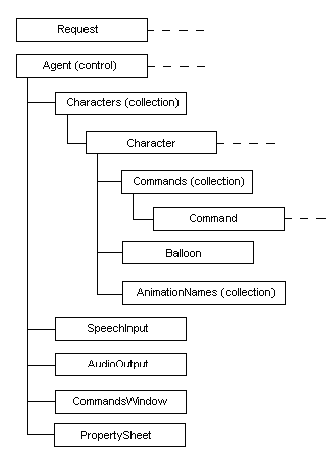

|
| ||
|
| ||
Microsoft Corporation
October 1998
Download this
document in Microsoft Word (.DOC) format (zipped, 82K).
Contents
Introduction
Document Conventions
Accessing the Control in Web Pages
Accessing Speech Services
Accessing the Control from Visual Basic
and Other Programming Languages
Accessing Microsoft Agent Services
Directly
The Request Object
The Agent Control
The Characters Object
The AudioOutput Object
The SpeechInput Object
The CommandsWindow Object
The PropertySheet Object
Although applications can write directly to the Microsoft® Agent services using its automation server interfaces, Microsoft Agent also includes an ActiveX® (OLE) control. The control supports easy programming using a scripting language such as Microsoft Visual Basic® Scripting Edition (VBScript) or other languages that support the ActiveX control interface.
This documentation uses the following typographical conventions:
| Convention | Description |
| Sub, Visible, Caption | Words in bold with initial letter capitalized indicate keywords. |
| agent, String, Now | Italic words indicate placeholders for information you supply. |
| ENTER, F1 | Words in all capital letters indicate filenames, key names, and key sequences. |
| Agent1.Commands.Enabled = True | Words in this font indicate code samples. |
| ' This is a comment | An apostrophe (') indicates a code comment. |
|
Agent1.Commands.Add "Test1", _
"Test 1", "test one" |
A space and an underscore (_) continues a line of code. |
| [words or expression] | Items inside square brackets are optional. |
| This | That | A vertical bar indicates a choice between two or more items. |
| agent | The word "agent" in italics represents the name of the agent control you use. |
The descriptions of programming interfaces in this document follow the conventions for Microsoft VBScript. However, they should be generally applicable to other languages as well.
To access the Microsoft Agent services from a Web page, use the HTML <OBJECT> tag within the <HEAD> or <BODY> element of the page, specifying the Microsoft CLSID (class identifier) for the control. In addition, use a CODEBASE parameter to specify the location of the Microsoft Agent installation file and its version number.
If Microsoft Internet Explorer (version 3.02 or later) is installed on the system, but Microsoft Agent is not yet installed and the user accesses a Web page that has the <OBJECT> tag with the Agent CLSID, the browser will automatically attempt to download Agent from the Microsoft Web site. Then, the user will be asked whether to proceed with the installation. For other browsers, contact the supplier for information regarding their support or third-party support for ActiveX controls.
The following example illustrates how to use the CODEBASE parameter to autodownload the English language version 2.0 of Microsoft Agent. For information about the current location of the Microsoft Agent installation file for specific language versions and the current release number available, see the Microsoft Agent Downloads for Developers page (http://msdn.microsoft.com/msagent/agentdev dl.asp).
<OBJECT classid="clsid:D45FD31B-5C6E-11D1-9EC1-00C04FD7081F" CODEBASE = "#VERSION=2,0,0,0" id=Agent > </OBJECT>
Subject to a valid, Microsoft Agent distribution license, Agent can also be installed from your own HTTP server or as part of an application's installation process. To support installation from your own HTTP server, you need to post the Microsoft Agent self-installing cabinet EXE file and specify its URL in the CODEBASE tab.
<OBJECT classid="clsid:D45FD31B-5C6E-11D1-9EC1-00C04FD7081F" CODEBASE = "http://your server/msagent.exe#VERSION=2,0,0,0" id=Agent > </OBJECT>
To obtain Agent's self-installing cabinet file from the Microsoft Agent Web site, simply download the Agent file, and chose the browser's Save option. This should save the file to your specified location.
To support other language versions of Agent, you use another Object tag specifying the language component. However, be aware that attempting to install multiple languages at the same time may require the user to reboot. The Agent language components can be obtained from the Agent Web site using the same procedure as for the Agent core component. Distribution licensing for the language components are covered in the standard Agent distribution license.
To begin using a character, you must load the character using the Load method. A character can be loaded from the user's local storage or an HTTP server. For more information about the syntax for loading a character, see the Load method. Once the character has been successful loaded you can use the methods, properties, and events exposed by the Agent control to program the character. You can also use the methods, properties, and events exposed by your programming language and the browser to program the character; for example, to program its reaction to a button click. Consult the documentation for your browser to determine what features it exposes in its scripting model. For Microsoft Internet Explorer, see the Scripting Object Model, which is available in the ActiveX SDK.
Agent's services remain loaded only when there is at least one client application with a connection. This means that when a user moves between Agent-enabled Web pages, Agent will shut down and any characters you loaded will disappear. To keep Agent running between pages (and thereby keep a character visible), create another client that remains loaded between page changes. For example, you can create an HTML frameset and declare an <OBJECT> tag for Agent in the parent frame. You can then script the pages you load into the child frame(s), to call into the parent's script. Alternatively, you can also include an <OBJECT> tag on each page you load into the child frame. In this case, remember that each page will be its own client. You may need to use the Activate method to set which client has control when the user interacts with the parent or child page.
VBScript is a programming language included with Microsoft
Internet Explorer. For other browsers, contact your vendor
about support. VBScript 2.0 (or later) is recommended for
use with Agent. Although earlier versions of VBScript may
work with Agent, they lack certain functions that you may
want to use. You can download VBScript 2.0 and obtain
further information on VBScript at the Microsoft Downloads site and the
Microsoft VBScript
site.
To program Microsoft Agent from VBScript, use the HTML <SCRIPT> tags. To access the programming interface, use the name of control you assign in the <OBJECT> tag, followed by the subobject (if any), the name of the method or property, and any parameters or values supported by the method or property:
agent[.object].Method parameter, [parameter] agent[.object].Property = value
For events, include the name of the control followed by the name of the event and any parameters:
Sub agent_event (ByVal parameter[,ByVal parameter]) statements… End Sub
You can also specify an event handler using the <SCRIPT> tag's For…Event syntax:
<SCRIPT LANGUAGE=VBScript For=agent Event=event[(parameter[,parameter])]> statements… </SCRIPT>
Although Microsoft Internet Explorer supports this latter syntax, not all browsers do. For compatibility, use only the former syntax for events.
With VBScript (2.0 or later), you can verify whether Microsoft Agent is installed by trying to create the object and checking to see if it exists. The following sample demonstrates how to check for the Agent control without triggering an auto-download of the control (as would happen if you included an <OBJECT> tag for the control on the page):
<!-- WARNING - This code requires VBScript 2.0.
It will always fail to detect the Agent control
in VbScript 1.x, because CreateObject doesn't work.
-->
<SCRIPT LANGUAGE=VBSCRIPT>
If HaveAgent() Then
'Microsoft Agent control was found.
document.write "<H2 ALIGN=center>Found</H2>"
Else
'Microsoft Agent control was not found.
document.write "<H2 ALIGN=center>Not Found</H2>"
End If
Function HaveAgent()
' This procedure attempts to create an Agent Control object.
' If it succeeds, it returns True.
' This means the control is available on the client.
' If it fails, it returns False.
' This means the control hasn't been installed on the client.
Dim agent
HaveAgent = False
On Error Resume Next
Set agent = CreateObject("Agent.Control.1")
HaveAgent = IsObject(agent)
End Function
</SCRIPT>
If you use JavaScript or Microsoft JScript® to access Microsoft Agent's programming interface, follow the conventions for this language for specifying methods or properties:
agent.object.Method (parameter) agent.object.Property = value
JavaScript does not currently have event syntax for non-HTML objects. However, with Internet Explorer you can use the <SCRIPT> tag's For…Event syntax:
<SCRIPT LANGUAGE="JScript" FOR="object" EVENT="event()"> statements… </SCRIPT>
Because not all browsers currently support this event syntax, you may want to use JavaScript only for pages that support Microsoft Internet Explorer or for code that does not require event handling.
To access Agent's object collections, use the JScript Enumerator function. However, versions of JScript included prior to Internet Explorer 4.0 do not support this function and do not support collections. To access methods and properties of the Character object, use the Character method. Similarly, to access the properties of a Command object, use the Command method.
Although Microsoft Agent's services include support for speech input, a compatible command-and-control speech recognition engine must be installed to access Agent's speech input services. Similarly, if you want to use Microsoft Agent's speech services to support synthesized speech output for a character, you must install a compatible text-to-speech (TTS) speech engine for your character.
To enable speech input support in your application, define a Command object and set its Voice property. Agent will automatically load speech services, so that when the user presses the Listening key or you call Listen, the speech recognition engine will be loaded. By default the character's LanguageID will determine which engine is loaded. Agent attempts to load the first engine that the Microsoft Speech API (SAPI) returns as matching this language. Use SRModeID if you want to load a specific engine.
To enable text-to-speech output, use the Speak method. Agent will automatically attempt to load an engine that matches the character's LanguageID. If the character's definition includes a specific TTS engine mode ID and that engine is available and matches the character's LanguageID, Agent loads that engine for the character. If it is not, it loads the first TTS engine that SAPI returns as matching the character's language setting. You can also use the TTSModeID to load a specific engine.
Typically, Agent loads speech recognition when the Listening mode is initiated and a text-to-speech engine when Speak is first called. However, if you want to preload the speech engine, you query the properties related to the speech interfaces. For example, querying SRModeID or TTSModeID will attempt to load that type of engine.
Because Microsoft Agent's speech services are based on the Microsoft Speech API, you can use any engines that support the required speech interfaces. Further information on the availability and use of speech recognition and text-to-speech engines at the Microsoft Agent Download page.
You can also use Microsoft Agent's control from Visual Basic® and other programming languages. Make sure that the language fully supports the ActiveX control interface, and follow its conventions for adding and accessing ActiveX controls.
To access the control, Agent must already be installed on the target system. If you want to install Microsoft Agent as part of your application, you must have a valid distribution license for Agent. You can access the License Agreement from the Microsoft Agent Web site.
You can then download Agent's self-installing cabinet file from the Web site (using the Save rather than Run option). You can include this file in your installation setup program. Whenever it is executed, it will automatically install Agent on the target system. For further details on installation, see the Microsoft Agent Distribution License Agreement. Installation other than using Agent's self-installing cabinet file, such as attempting to copy and register Agent component files, is not supported. This ensures consistent and complete installation. Note that the Microsoft Agent self-installing file will not install on Microsoft Windows 2000 (NT5) because that version of the operating system already includes its own version of Agent.
To successfully install Agent on a target system, you must also ensure that the target system has a recent version of the Microsoft Visual C++ runtime (Msvcrt.dll), Microsoft registration tool (Regsvr32.dll), and Microsoft COM dlls. The easiest way to ensure that the necessary components are on the target system is to require that Microsoft Internet Explorer 3.02 or later is installed. Alternatively, you can install the first two components that are available as part of Microsoft Visual C++. The necessary COM dlls can be installed as part of the Microsoft DCOM update, available at the Microsoft Web site. You can find further information and licensing information for these components at the Microsoft Web site.
Agent's language components can be installed the same way. Similarly, you can use this technique to install the ACS format of the Microsoft characters available for distribution from the Microsoft Agent Web site. The character files automatically install to the Microsoft Agent \Chars directory.
Because Microsoft Agent's components are designed as operating system components, Agent may not be uninstalled. Similarly, where Agent is already installed as part of the Windows operating system, the Agent self-installing cabinet may not install.
Accessing Microsoft Agent's control requires that you first create the control. The easiest way to do this is to place an instance of the control on a form. (You may have to add the control to your toolbox before adding it to your form. Depending on your programming language, you may also be able to create the control at runtime.)
Using Microsoft Agent's control with Visual Basic is very similar to using the control with VBScript, except that events in Visual Basic must include the data type of passes parameters. Adding the Microsoft Agent control to a form will automatically include Microsoft Agent's events with their appropriate parameters. It will also automatically create a connection to the Agent server when the application runs.
You may also be able to use your programming language object's creation syntax to create an instance of the control at runtime. for example, in Visual Basic (5.0 or later), if you include the Microsoft Agent 2.0 Control in your project's references, you can use a With Events..New declaration. If you do not include the reference, VB raises an error indicating that Microsoft Agent was unable to start (error code 80042502).
' Declare a global variable for the control
Dim WithEvents MyAgent as Agent
' Create an instance of the control using New
Set MyAgent = New Agent
' Load a character
MyAgent.Characters.Load "Genie", " Genie.acs"
' Display the character
MyAgent.Characters("Genie").Show
For versions of VB prior to 5.0, you can use the VB New keyword without WithEvents declaration or the VB CreateObject function, but these conventions will not expose the Agent control's events. You also need to use the Connected property before you reference any Agent methods or properties. If this is not done, VB will raise an error indicating the Microsoft Agent was unable to start (error 80042502).
Similarly for other programming languages, you may have to use the Connected property to establish a connection to the Agent Component Object Model (COM) server before your code can call any of the Agent control's methods or properties. In addition, for some programming languages, Agent's methods and properties may not be directly exposed unless you declare the Agent control using its type. For example, in Microsoft® Access 97, you will need to declare the object as type Agent (or IAgentCtlEx) to see the methods and properties display in the Auto List Members drop-down box when you type.
Most programming languages that support ActiveX controls follow conventions similar to Visual Basic. For programming languages that do not support object collections, you can use the Character method and Command method to access methods and properties of items in the collection.
Programming languages like Visual Basic, that provide access to the object types exposed by the Agent control, enable you to use these in your object declarations. For example, instead of declaring an object as a generic type:
Dim Genie as Object
You can declare an object as a specific type:
Dim Genie as IAgentCtlCharacterEx
This may improve the overall performance of your application.
For some object types, you may find two types that are the same except for the "Ex" suffix. Where both exist, use the "Ex" type because this provides the full functionality of Agent. The non-"Ex" counterparts are included only for backward compatibility.
Applications built and compiled with the previous 1.5 version of Microsoft Agent should run without modification under the new 2.0 version. The Connected property can no longer set toFalse; certain properties of the SpeechInput object that have been replaced still exist, but no longer turn any values, and the server no longer fires the Restart and Shutdown events.
However, if you update your applications to use the Agent 2.0 control, you may have to modify your code. If you have installed the 2.0 version of Microsoft Agent and load a Visual Basic project, use the earlier version of the Agent control. Visual Basic includes an option that will automatically display a message indicating that it detected a new version of the control. To ensure proper operation of your application, always choose to use the later version.
For other programming languages (such as Microsoft Office 97 VBA), to update the control, you may have to first remove the 1.5 Agent control and save your code. Then, quit the programming environment, restart the programming environment, reload your code and insert the new control. Avoid editing an Agent 2.0-enabled application in the same instance of the programming environment that you are editing an Agent 1.5-enabled application in. Some programming environments may not handle the differences between the two versions of controls.
You should be able to uninstall the Agent 1.5 release on your system after installing the Agent 2.0 release. However, if Agent 1.5 is installed over the 2.0 release, you may have to reinstall 2.0.
If you are using C, C++, or Java, you can access the Microsoft Agent server directly using its ActiveX (OLE) interfaces. For more information on these interfaces, see Programming the Microsoft Agent Server Interface.
The Microsoft Agent Object Model consists of the following objects:
These objects are organized in the following hierarchy. (The dotted line following an object indicates that multiple objects can exist.)

Figure 3. The Agent Object
The server processes some methods, such as Load, Get, Play, and Speak, asynchronously. This enables your application code to continue while the method is completing. When a client application calls one of these methods, the control creates and returns a Request object for the request. You can use the Request object to track the status of the method by assigning an object variable to the method. In Visual Basic, first declare an object variable:
Dim MyRequest as Object
In VBScript, you don't include the variable type in your declaration:
Dim MyRequest
And use Visual Basic's Set statement to assign the variable to the method call:
Set MyRequest =
agent.Characters("CharacterID").method (parameter[s])
This adds a reference to the Request object. The Request object will be destroyed when there are no more references to it. Where you declare the Request object and how you use it determines its lifetime. If the object is declared local to a subroutine or function, it will be destroyed when it goes out of scope; that is, when the subroutine or function ends. If the object is declared globally, it will not be destroyed until either the program terminates or a new value (or a value set to "empty") is assigned to the object.
The Request object provides several properties you can query. For example, the Status property returns the current status of the request. You can use this property to check the status of your request:
Dim MyRequest
Set MyRequest = Agent1.Characters.Load ("Genie",
"http://agent.microsoft.com/agent2/chars/genie/genie.acf")
If (MyRequest.Status = 2) then
'do something
Else If (MyRequest.Status = 0) then
'do something right away
End If
The Status property returns the status of a Request object as a Long integer value.
| Status | Definition |
| 0 | Request successfully completed. |
| 1 | Request failed. |
| 2 | Request pending (in the queue, but not complete). |
| 3 | Request interrupted. |
| 4 | Request in progress. |
The Request object also includes a Long integer value in the Number property that returns the error or cause of the Status code. If none, this value is zero (0). The Description property contains a string value that corresponds to the error number. If the string doesn't exist, Description contains "Application-defined or object-defined error".
For the values and meaning returned by the Number property, see Error Codes.
The server places animation requests in the specified character's queue. This enables the server to play the animation on a separate thread, and your application's code can continue while animations play. If you create a Request object reference, the server automatically notifies you when an animation request has started or completed through the RequestStart and RequestComplete events. Because methods that return Request objects are asynchronous and may not complete during the scope of the calling function, declare your reference to the Request object globally.
The following methods can be used to return a Request object: GestureAt, Get, Hide, Interrupt, Load, MoveTo, Play, Show, Speak, and Wait.
Referencing the Agent control provides access to events and most other objects supported by Microsoft Agent. The Agent control also directly exposes its own set of properties.
The following method is available from the Agent control.
Description
Displays the default character's properties.
Syntax
agent.ShowDefaultCharacterProperties [ X , Y]
| Part | Description |
| X | Optional. A short integer value that indicates the horizontal (X) screen coordinate to display the window. This coordinate must be specified in pixels. |
| Y | Optional. A short integer value that indicates the vertical (Y) screen coordinate to display the window. This coordinate must be specified in pixels. |
Remarks
Calling this method displays the default character properties window (not the Microsoft Agent property sheet). If you do not specify the X and Y coordinates, the window appears at the last location it was displayed.
See Also
DefaultCharacterChange event
The following properties are directly accessed from the Agent control:
Connected, Name, RaiseRequestErrors
In addition, some programming environments may assign additional design-time or run-time properties. For example, Visual Basic adds Left, Index, Tag, and Top properties that define the location of the control on a form even though the control does not appear on the form's page at run time.
The Suspended property is still supported for backward compatibility, but always returns False because the server no longer supports a suspended state.
Description
Returns or sets whether the current control is connected to the Microsoft Agent server.
Syntax
agent.Connected [ = boolean]
| Part | Description |
| boolean |
A Boolean expression specifying whether the control is
connected.
True The control is connected. |
Remarks
In many situations, specifying the control automatically creates a connection with the Microsoft Agent server. For example, specifying the Microsoft Agent control's CLSID in the <OBJECT> tag in a Web page automatically opens a server connection and exiting the page closes the connection. Similarly, for Visual Basic or other languages that enable you to drop a control on a form, running the program automatically opens a connection and exiting the program closes the connection. If the server isn't currently running, it automatically starts.
However, if you want to create an Agent control at run time, you may also need to explicitly open a new connection to the server using the Connected property. For example, in Visual Basic you can create an ActiveX object at run time using the Set statement with the New keyword (or CreateObject function). While this creates the object, it may not create the connection to the server. You can use the Connected property before any code that calls into Microsoft Agent's programming interface, as shown in the following example:
' Declare a global variable for the control
Dim MyAgent as Agent
' Create an instance of the control using New
Set MyAgent = New Agent
' Open a connection to the server
MyAgent.Connected = True
' Load a character
MyAgent.Characters.Load "Genie", " Genie.acs"
' Display the character
MyAgent.Characters("Genie").Show
Creating a control using this technique does not expose the Agent control's events. In Visual Basic 5.0 (and later), you can access the control's events by including the control in your project's references, and use the WithEvents keyword in your variable declaration:
Dim WithEvents MyAgent as Agent ' Create an instance of the control using New Set MyAgent = New Agent
Using WithEvents to create an instance of the Agent control at run time automatically opens the connection with the Microsoft Agent server. Therefore, you don't need to include a Connected statement.
You can close your connection to the server by releasing all references you created to Agent objects, such as IAgentCtlCharacterEx and IAgentCtlCommandEx. You must also release your reference to the Agent control itself. In Visual Basic, you can release a reference to an object by setting its variable to Nothing. If you have loaded characters, unload them before releasing the character object.
Dim WithEvents MyAgent as Agent
Dim Genie as IAgentCtlCharacterEx
Sub Form_Load
' Create an instance of the control using New
Set MyAgent = New Agent
' Open a connection to the server
MyAgent.Connected = True
' Load the character into the Characters collection
MyAgent.Characters.Load "Genie", " Genie.acs"
' Create a reference to the character
Set Genie = MyAgent.Characters("Genie")
End Sub
Sub CloseConnection
' Unload the character
MyAgent.Characters.Unload "Genie"
' Release the reference to the character object
Set Genie = Nothing
' Release the reference to the Agent control
Set MyAgent = Nothing
End Sub
Note You cannot close your connection to the server by releasing references where the component has been added. For example, you cannot close your connection to the server on Web pages where you use the <OBJECT> tag to declare the control or in a Visual Basic application where you drop the control on a form. While releasing all Agent references will reduce Agent's working set, the connection remains until you navigate to the next page or exit the application.
Description
Returns the name used in code to identify the control. This property is read-only at run time.
Syntax
agent.Name
Remarks
In some programming environments such as Visual Basic, adding the control automatically generates a default name for the control that can be changed at design time. For HTML scripts, you can define the name in the <OBJECT> tag. If you define the name, follow the conventions of the programming language for defining object names.
Description
Returns or sets whether errors for requests are raised.
Syntax
agent.RaiseRequestErrors [ = boolean]
| Part | Description |
| boolean |
A Boolean value that determines whether errors in
requests are raised.
True (Default) Request errors are raised. False Request errors are not raised. |
Remarks
This property enables you to determine whether the server raises errors that occur with methods that support Request objects. For example, if you specify an animation name that does not exist in a Play method, the server raises an error (displaying the error message) unless you set this property to False.
It may be useful for programming languages that do not provide recovery when an error is raised. However, use care when setting this property to False, because it might be harder to find errors in your code.
The Microsoft Agent control provides several events that enable your client application to track the state of the server:
ActivateInput, ActiveClientChange, AgentPropertyChange, BalloonHide, BalloonShow, Bookmark, Click, Command, DblClick, DeactivateInput, DefaultCharacterChange, DragComplete, DragStart, HelpComplete, Hide, IdleComplete, IdleStart, ListenComplete, ListenStart, Move, RequestComplete, RequestStart, Show, Size
The Restart and Shutdown events are supported for backward compatibility, but the server no longer sends these events.
Description
Occurs when a client becomes input-active.
Syntax
Sub agent_ActivateInput (ByVal CharacterID)
| Part | Description |
| CharacterID | Returns the ID of the character through which the client becomes input-active. |
Remarks
The input-active client receives mouse and speech input events supplied by the server. The server sends this event only to the client that becomes input-active.
This event can occur when the user switches to your Commands object, for example, by choosing your Commands object entry in the Commands Window or in the pop-up menu for a character. It can also occur when the user selects a character (by clicking or speaking its name), when a character becomes visible, and when the character of another client application becomes hidden. You can also call the Activate method (with State set to 2) to explicitly make the character topmost, which results in your client application becoming input-active and triggers this event. However, this event does not occur if you use the Activate method only to specify whether your client is the active client of the character.
See Also
DeactivateInput event, Activate method
Description
Occurs when the active client of the character changes.
Syntax
Sub agent.ActiveClientChange (ByVal CharacterID, ByVal Active )
| Part | Description |
| CharacterID | Returns the ID of the character for which the event occurred. |
| Active |
A Boolean value that indicates whether the client
became active or not active.
True The client application became the active client of the character. False The client application is no longer the active client of the character. |
Remarks
When multiple client applications share the same character, the active client of the character receives mouse input (for example, Microsoft Agent control click or drag events). Similarly, when multiple characters are displayed, the active client of the topmost character (also known as the input-active client) receives Command events.
When the active client of a character changes, this event passes back the ID of that character and True if your application has become the active client of the character or False if it is no longer the active client of the character.
A client application may receive this event when the user selects a client application's entry in character's pop-up menu or by voice command, when the client application changes its active status, or when another client application quits its connection to Agent. Agent sends this event only to the client applications that are directly affected; that either become the active client or stop being the active client.
See Also
ActivateInput event, Active property, DeactivateInput event, Activate method
Description
Occurs when the user changes a property in the Advanced Character Options window.
Syntax
Sub agent.AgentPropertyChange ()
Remarks
This event indicates when the user has changed and applied any property included in the Advanced Character Option window.
In your code for this handling this event, you can query for the specific property settings of AudioOutput or SpeechInput objects.
See Also
DefaultCharacterChange event
Description
Occurs when a character's word balloon is hidden.
Syntax
Sub agent_BalloonHide (ByVal CharacterID)
| Part | Description |
| CharacterID | Returns the ID of the character associated with the word balloon. |
Remarks
The server sends this event only to the clients of the character (applications that have loaded the character) that uses the word balloon.
See Also
BalloonShow event
Description
Occurs when a character's word balloon is shown.
Syntax
Sub agent_BalloonShow (ByVal CharacterID)
| Part | Description |
| CharacterID | Returns the ID of the character associated with the word balloon. |
Remarks
The server sends this event only to the clients of the character (applications that have loaded the character) that uses the word balloon.
See Also
BalloonHide event
Description
Occurs when a bookmark in a speech text string that your application defined is activated.
Syntax
Sub agent_Bookmark(ByVal BookmarkID)
| Part | Description |
| BookmarkID | A Long integer identifying the bookmark number. |
Remarks
To specify a bookmark event, use the Speak method with a Mrk tag in your supplied text. For more information about tags, see Speech Output Tags.
Description
Occurs when the user clicks a character or the character's icon.
Syntax
Sub agent_Click (ByVal CharacterID, ByVal Button, ByVal Shift, ByVal X, ByVal Y)
| Part | Description |
| CharacterID | Returns the ID of the clicked character as a string. |
| Button | Returns an integer that identifies the button that was pressed and released to cause the event. The button argument is a bit field with bits corresponding to the left button (bit 0), right button (bit 1), and middle button (bit 2). These bits correspond to the values 1, 2, and 4, respectively. Only one of the bits is set, indicating the button that caused the event. If the character includes a taskbar icon, and bit 13 is also set, the click occurred on the taskbar icon. |
| Shift | Returns an integer that corresponds to the state of the SHIFT, CTRL, and ALT keys when the button specified in the button argument is pressed or released. A bit is set if the key is down. The shift argument is a bit field with the least-significant bits corresponding to the SHIFT key (bit 0), the CTRL key (bit 1), and the ALT key (bit 2). These bits correspond to the values 1, 2, and 4, respectively. The shift argument indicates the state of these keys. Some, all, or none of the bits can be set, indicating that some, all, or none of the keys are pressed. For example, if both CTRL and ALT were pressed, the value of shift would be 6. |
| X,Y | Returns an integer that specifies the current location of the mouse pointer. The X and Y values are always expressed in pixels, relative to the upper left corner of the screen. |
Remarks
This event is sent only to the input-active client of a character. When the user clicks a character or its taskbar icon with no input-active client, the server sends the event to its active client. If the character is visible (Visible = True), the user's action also sets the character's last input-active client as the current input-active client, sending the ActivateInput event to that client, and then sending the Click event. If the character is hidden (Visible = False), and the user clicks the character's taskbar icon using button 1, the character is also automatically shown.
Note Clicking a character does not disable all other character output (all characters). However, pressing the Listening key does flush the input-active character's output and triggers the RequestComplete event, passing a Request.Status that indicates that the client's queue was interrupted.
Description
Occurs when the user chooses a (client's) command.
Syntax
Sub agent_Command(ByVal UserInput)
| Part | Description |
| UserInput |
Identifies the Command object returned by the
server.
The following properties can be accessed from the Command object: CharacterID A string value identifying the name (ID) of the character that received the command. Name A string value identifying the name (ID) of the command. Confidence A Long integer value indicating the confidence scoring for the command. Voice A string value identifying the voice text for the command. Alt1Name A string value identifying the name of the next (second) best command. Alt1Confidence A Long integer value indicating the confidence scoring for the next (second) best command. Alt1Voice A string value identifying the voice text for the next best alternative command match. Alt2Name A string value identifying the name of third best command match. Alt2Confidence A Long integer identifying the confidence scoring for the third best command match. Alt2Voice A string value identifying the voice text for the third best command match. Count Long integer value indicating the number of alternatives returned. |
Remarks
The server notifies you with this event when your application is input-active and the user chooses a command by spoken input or character's pop-up menu. The event passes back the number of possible matching commands in Count as well as the name, confidence scoring, and voice text for those matches.
If voice input triggers this event, the server returns a string that identifies the best match in the Name parameter, and the second- and third-best match in Alt1Name and Alt2Name. An empty string indicates that the input did not match any command your application defined; for example, it could be one of the server's defined commands. If the command was matched to the Agent's command; for example, Hide, an empty string would be returned in the Name parameter, but you would still receive the text heard in the Voice parameter.
You may get the same command name returned in more than one entry. Confidence, Alt1Confidence, and Alt2Confidence parameters return the relative scores, in the range of -100 to 100, that are returned by the speech recognition engine for each respective match. Voice, Alt1Voice, and Alt2Voice parameters return the voice text that the speech recognition engine matched for each alternative. If Count returns zero (0), the server detected spoken input, but determined that there was no matching command.
If voice input was not the source for the command, for example, if the user selected the command from the character's pop-up menu, the server returns the name (ID) of the command selected in the Name property. It also returns the value of the Confidence parameter as 100, and the value of the Voice parameters as the empty string (""). Alt1Name and Alt2Name also return empty strings. Alt1Confidence and Alt2Confidence return zero (0), and Alt1Voice and Alt2Voice return empty strings. Count returns 1.
Note Not all speech recognition engines may return all the values for all the parameters of this event. Check with your engine vendor to determine whether the engine supports the Microsoft Speech API interface for returning alternatives and confidence scores.
Description
Occurs when the user double-clicks a character.
Syntax
Sub agent_DblClick (ByVal CharacterID, ByVal Button, ByVal Shift, ByVal X, ByVal Y)
| Part | Description |
| CharacterID | Returns the ID of the double-clicked character as a string. |
| Button | Returns an integer that identifies the button that was pressed and released to cause the event. The button argument is a bit field with bits corresponding to the left button (bit 0), right button (bit 1), and middle button (bit 2). These bits correspond to the values 1, 2, and 4, respectively. Only one of the bits is set, indicating the button that caused the event. If the character includes a taskbar icon, if bit 13 is also set, the click occurred on the taskbar icon. |
| Shift | Returns an integer that corresponds to the state of the SHIFT, CTRL, and ALT keys when the button specified in the button argument is pressed or released. A bit is set if the key is down. The shift argument is a bit field with the least-significant bits corresponding to the SHIFT key (bit 0), the CTRL key (bit 1), and the ALT key (bit 2). These bits correspond to the values 1, 2, and 4, respectively. The shift argument indicates the state of these keys. Some, all, or none of the bits can be set, indicating that some, all, or none of the keys are pressed. For example, if both CTRL and ALT were pressed, the value of shift would be 6. |
| X,Y | Returns an integer that specifies the current location of the mouse pointer. The X and Y values are always expressed in pixels, relative to the upper left corner of the screen. |
Remarks
This event is sent only to the input-active client of a character. When the user double-clicks a character or its taskbar icon with no input-active client, the server sends the event to its last input-active client. If the character is visible (Visible = True), then it also sets the active client as the current input-active client, sending the ActivateInput event to that client, and then sending the DblClick event. If the character is hidden (Visible = False) and the user double-clicks the character's taskbar icon using button 1, it also automatically shows the character.
Description
Occurs when a client becomes non-input-active.
Syntax
Sub agent_DeactivateInput (ByVal CharacterID)
| Part | Description |
| CharacterID | Returns the ID of the character that makes the client become non-input-active. |
Remarks
A non-input-active client no longer receives mouse or speech events from the server (unless it becomes input-active again). The server sends this event only to the client that becomes non-input-active.
This event occurs when your client application is input-active and the user chooses the caption of another client in a character's pop-up menu or the Voice Commands Window or you call the Activate method and set the State parameter to 0. It may also occur when the user selects the name of another character by clicking or speaking. You also get this event when your character is hidden or another character becomes visible.
See Also
ActivateInput event
Description
Occurs when the user changes the default character.
Syntax
Sub agent.DefaultCharacterChange (ByVal GUID)
| Part | Description |
| GUID | Returns the unique identifier for the character. |
Remarks
This event indicates when the user has changed the character assigned as the user's default character. The server sends this only to clients that have loaded the default character.
When the new character appears, it assumes the same size as any already loaded instance of the character or the previous default character (in that order).
See Also
ShowDefaultCharacterProperties method, Load method
Description
Occurs when the user completes dragging a character.
Syntax
Sub agent_DragComplete (ByVal CharacterID, ByVal Button, ByVal Shift, ByVal X, ByVal Y)
| Part | Description |
| CharacterID | Returns the ID of the dragged character as a string. |
| Button | Returns an integer that identifies the button that was pressed and released to cause the event. The button argument is a bit field with bits corresponding to the left button (bit 0), right button (bit 1), and middle button (bit 2). These bits correspond to the values 1, 2, and 4, respectively. Only one of the bits is set, indicating the button that caused the event. |
| Shift | Returns an integer that corresponds to the state of the SHIFT, CTRL, and ALT keys when the button specified in the button argument is pressed or released. A bit is set if the key is down. The shift argument is a bit field with the least-significant bits corresponding to the SHIFT key (bit 0), the CTRL key (bit 1), and the ALT key (bit 2). These bits correspond to the values 1, 2, and 4, respectively. The shift argument indicates the state of these keys. Some, all, or none of the bits can be set, indicating that some, all, or none of the keys are pressed. For example, if both CTRL and ALT were pressed, the value of shift would be 6. |
| X,Y | Returns an integer that specifies the current location of the mouse pointer. The X and Y values are always expressed in pixels, relative to the upper left corner of the screen. |
Remarks
This event is sent only to the input-active client of a character. When the user drags a character with no input-active client, the server sets its last input-active client as the current input-active client, sending the ActivateInput event to that client, and then sending the DragStart and DragComplete events.
See Also
DragStart event
Description
Occurs when the user begins dragging a character.
Syntax
Sub agent_DragStart (ByVal CharacterID, ByVal Button, ByVal Shift, ByVal X, ByVal Y)
| Part | Description |
| CharacterID | Returns the ID of the clicked character as a string. |
| Button | Returns an integer that identifies the button that was pressed and released to cause the event. The button argument is a bit field with bits corresponding to the left button (bit 0), right button (bit 1), and middle button (bit 2). These bits correspond to the values 1, 2, and 4, respectively. Only one of the bits is set, indicating the button that caused the event. |
| Shift | Returns an integer that corresponds to the state of the SHIFT, CTRL, and ALT keys when the button specified in the button argument is pressed or released. A bit is set if the key is down. The shift argument is a bit field with the least-significant bits corresponding to the SHIFT key (bit 0), the CTRL key (bit 1), and the ALT key (bit 2). These bits correspond to the values 1, 2, and 4, respectively. The shift argument indicates the state of these keys. Some, all, or none of the bits can be set, indicating that some, all, or none of the keys are pressed. For example, if both CTRL and ALT were pressed, the value of shift would be 6. |
| X,Y | Returns an integer that specifies the current location of the mouse pointer. The X and Y values are always expressed in pixels, relative to the upper left corner of the screen. |
Remarks
This event is sent only to the input-active client of a character. When the user drags a character with no input-active client, the server sets its last input-active client as the current input-active client, sending the ActivateInput event to that client, and then sending the DragStart event.
See Also
DragComplete event
Description
Indicates that context-sensitive Help mode has been exited.
Syntax
Sub agent.HelpComplete (ByVal CharacterID, ByVal Name, ByVal Cause)
| Part | Description |
| CharacterID | Returns the ID of the clicked character as a string. |
| Name | Returns a string value identifying the name (ID) of the command. |
| Cause |
Returns a value that indicates what caused the Help
mode to complete.
1 The user selected a command supplied by your application. 2 The user selected the Commands object of another client. 3 The user selected the Open Voice Commands command. 4 The user selected the Close Voice Commands command. 5 The user selected the Show CharacterName command. 6 The user selected the Hide CharacterName command. 7 The user selected (clicked) the character. |
Remarks
Typically, Help mode completes when the user clicks or drags the character or selects a command from the character's pop-up menu. Clicking on another character or elsewhere on the screen does not cancel Help mode. The client that set Help mode for the character can cancel Help mode by setting HelpModeOn to False. (This does not trigger the HelpComplete event.)
When the user selects a command from the character's pop-up menu in Help mode, the server removes the menu, calls Help with the command's specified HelpContextID, and sends this event. The context-sensitive (also known as What's This?) Help window is displayed at the pointer location. If the user selects the command by voice input, the Help window is displayed over the character. If the character is off-screen, the window is displayed on-screen nearest to the character's current position.
If the server returns Name as an empty string (""), it indicates that the user selected a server-supplied command.
This event is sent only to the client application that places the character in Help mode.
See Also
HelpModeOn property, HelpContextID property
Description
Occurs when a character is hidden.
Syntax
Sub agent_Hide (ByVal CharacterID, ByVal Cause)
| Part | Description |
| CharacterID | Returns the ID of the hidden character as a string. |
| Cause |
Returns a value that indicates what caused the
character to hide.
1 User hid the character by selecting the command on the character's taskbar icon pop-up menu or using speech input. 3 Your client application hid the character. 5 Another client application hid the character. 7 User hid the character by selecting the command on the character's pop-up menu. |
Remarks
The server sends this event to all clients of the character. To query the current state of the character, use the Visible property.
See Also
Show event, VisibilityCause property
Description
Occurs when the server ends the Idling state of a character.
Syntax
Sub agent_IdleComplete (ByVal CharacterID)
| Part | Description |
| CharacterID | Returns the ID of the idling character as a string. |
Remarks
The server sends this event to all clients of the character.
See Also
IdleStart event
Description
Occurs when the server sets a character to the Idling state.
Syntax
Sub agent_IdleStart (ByVal CharacterID)
| Part | Description |
| CharacterID | Returns the ID of the idling character as a string. |
Remarks
The server sends this event to all clients of the character.
See Also
IdleComplete event
Description
Occurs when Listening mode (speech recognition) has ended.
Syntax
Sub agent.ListenComplete (ByVal CharacterID, ByVal Cause)
| Part | Description |
| CharacterID | Returns the ID of the listening character as a string. |
| Cause |
Returns the cause of the complete event as an integer
that may be one of the following:
1 Listening mode was turned off by program code. 2 Listening mode (turned on by program code) timed out. 3 Listening mode (turned on by the Listening key) timed out. 4 Listening mode was turned off because the user released the Listening key. 5 Listening mode ended because the user finished speaking. 6 Listening mode ended because the input-active client was deactivated. 7 Listening mode ended because the default character was changed. 8 Listening mode ended because the user disabled speech input. |
Remarks
This event is sent to all clients when the Listening mode time-out ends, after the user releases the Listening key, when the input active client calls the Listen method with False, or the user finished speaking. You can use this event to determine when to resume character spoken (audio) output.
If you turn on Listening mode using the Listen method and then the user presses the Listening key, the Listening mode resets and continues until the Listening key time-out completes, the Listening key is released, or the user finishes speaking, whichever is later. In this situation, you will not receive a ListenComplete event until the listening key's mode completes.
The event returns the character to the clients that currently have this character loaded. All other clients receive a null character (empty string).
See Also
ListenStart event, Listen method
Description
Occurs when Listening mode (speech recognition) begins.
Syntax
Sub agent.ListenStart (ByVal CharacterID)
| Part | Description |
| CharacterID | Returns the ID of the listening character as a string. |
Remarks
This event is sent to all clients when Listening mode begins because the user pressed the Listening key or the input-active client called the Listen method with True. You can use this event to avoid having your character speak while the Listening mode is on.
If you turn on Listening mode with the Listen method and then the user presses the Listening key, the Listening mode resets and continues until the Listening key time-out completes, the Listening key is released, or the user finishes speaking, whichever is later. In this situation, when Listening mode is already on, you will not get an additional ListenStart event when the user presses the Listening key.
The event returns the character to the clients that currently have this character loaded. All other clients receive a null character (empty string).
See Also
ListenComplete event, Listen method
Description
Occurs when a character is moved.
Syntax
Sub agent_Move (ByVal CharacterID, ByVal X, ByVal Y, ByVal Cause)
| Part | Description |
| CharacterID | Returns the ID of the character that moved. |
| X | Returns the x-coordinate (in pixels) of the top edge of character frame's new location as an integer. |
| Y | Returns the y-coordinate (in pixels) of the left edge of character frame's new location as an integer. |
| Cause |
Returns a value that indicates what caused the
character to move.
1 The user dragged the character. 2 Your client application moved the character. 3 Another client application moved the character. 4 The Agent server moved the character to keep it onscreen after a screen resolution change. |
Remarks
This event occurs when the user or an application changes the character's position. Coordinates are relevant to the upper left corner of the screen. This event is sent only to the clients of the character (applications that have loaded the character).
See Also
Description
Occurs when the server completes a queued request.
Syntax
Sub agent_RequestComplete (ByVal Request)
| Part | Description |
| Request | Returns the Request object. |
Remarks
This event returns a Request object. Because requests are processed asynchronously, you can use this event to determine when the server completes processing a request (such as a Get, Play, or Speak method) to synchronize this event with other actions generated by your application. The server sends the event only to the client that created the reference to the Request object and only if you defined a global variable for the request reference:
Dim MyRequest
Dim Genie
Sub window_Onload
Agent1.Characters.Load
"Genie","http://agent.microsoft.com/agent2/chars/genie/genie.acf"
Set Genie = Agent.Characters("Genie")
' This syntax will generate RequestStart and RequestComplete events.
Set MyRequest = Genie.Get("state", "Showing")
' This syntax will not generate RequestStart and RequestComplete events.
Genie.Get "state", "Hiding"
End Sub
Sub Agent1_RequestComplete(ByVal Request)
If Request = MyRequest Then
Status = "Showing animation is now loaded"
End Sub
Because animation Request objects don't get assigned until the server processes the request, make sure that the Request object exists before you attempt to evaluate it. For example, in Visual Basic, if you use a conditional to test whether a specific request was completed, you can use the Nothing keyword:
Sub Agent1_RequestComplete (ByVal Request)
If Not (MyRequest Is Nothing) Then
If Request = MyRequest Then
'-- Do whatever
End If
End If
End Sub
Note In VBScript 1.0, this event fires even if you don't define references to a Request object. This has been fixed in VBScript 2.0, which can be downloaded from http://microsoft.com/msdownload/scripting.htm.
See Also
RequestStart event
Description
Occurs when the server begins a queued request.
Syntax
Sub agent_RequestStart (ByVal Request)
| Part | Description |
| Request | Returns the Request object. |
Remarks
The event returns a Request object. Because requests are processed asynchronously, you can use this event to determine when the server begins processing a request (such as a Get, Play, or Speak method) and thereby synchronize this with other actions generated by your application. The event is sent only to the client that created the reference to the Request object and only if you defined a global variable for the request reference:
Dim MyRequest
Dim Genie
Sub window_Onload
Agent1.Characters.Load "Genie", _
"http://agent.microsoft.com/agent2/chars/genie/genie.acf"
Set Genie = Agent1.Characters("Genie")
' This syntax will generate RequestStart and RequestComplete events.
Set MyRequest = Genie.Get("state", "Showing")
' This syntax will not generate RequestStart and RequestComplete events.
Genie.Get ("state", "Hiding")
End Sub
Sub Agent1_RequestStart(ByVal Request)
If Request = MyRequest Then
Status = "Loading the Showing animation"
End Sub
The Status returns 4 (request in progress) for the Request object returned.
Because animation Request objects don't get assigned until the server processes the request, make sure that the Request object exists before you attempt to evaluate it. For example, in Visual Basic, if you use a conditional to test whether a specific request was completed, you can use the Nothing keyword:
Sub Agent1_RequestStart (ByVal Request)
If Not (MyRequest Is Nothing) Then
If Request = MyRequest Then
'-- Do whatever
End If
End If
End Sub
Note In VBScript 1.0, this event fires even if you don't define references to a Request object. This has been fixed in VBScript 2.0, which can be downloaded from http://microsoft.com/msdownload/scripting.htm.
See Also
RequestComplete event
Description
Occurs when a character is displayed.
Syntax
Sub agent_Show (ByVal CharacterID, ByVal Cause)
| Part | Description |
| CharacterID | Returns the ID of the character shown as a string. |
| Cause |
Returns a value that indicates what caused the
character to display.
2 The user showed the character (using the menu or voice command). 4 Your client application showed the character. 6 Another client application showed the character. |
Remarks
The server sends this event to all clients of the character. To query the current state of the character, use the Visible property.
See Also
Hide event, VisibilityCause property
Description
Occurs when a character's size changes.
Syntax
Sub agent_Size (ByVal CharacterID, ByVal Width, ByVal Height)
| Part | Description |
| CharacterID | Returns the ID of the character that moved. |
| Width | Returns the character frame's new width (in pixels) as an integer. |
| Height | Returns the character frame's new height (in pixels) as an integer. |
Remarks
This event occurs when an application changes the size of a character. This event is sent only to the clients of the character (applications that have loaded the character).
See Also
Move event
Your client application can support one or more characters. In addition, you can share a character among several applications. Microsoft Agent defines the Characters object as a collection of characters. To access a character, load the character's data into the Characters collection and specify that that item in the collection uses the methods and properties supported for that character.
The Characters object supports methods for accessing, loading, and unloading characters into its collection:
Description
Returns a Character object in a Characters collection.
Syntax
agent.Characters.Character "CharacterID"
Remarks
You can use this method to access a Character object's methods and properties.
Note This method may be required for some programming languages that do not support collections. It is not required for VBScript or Visual Basic. For further information on specifying Character methods, see Character Object Methods.
Description
Loads a character into the Characters collection.
Syntax
agent.Characters.Load "CharacterID", Provider
| Part | Description |
| CharacterID | Required. A string value that you will use to refer to the character data to be loaded. |
| Provider |
Required. A variant data type that must be one of the
following:
Filespec The local file location of the specified character's definition file. URL The HTTP address for the character's definition file. |
Remarks
You can load characters from the Agent subdirectory by specifying a relative path (one that does not include a colon or leading slash character). This prefixes the path with Agent's characters directory (located in the localized Windows\msagent directory). For example, specifying the following would load Genie.acs from Agent's Chars directory:
Agent.Character.Load "genie", "genie.acs"
You can also specify your own directory in Agent's Chars directory.
Agent.Character.Load "genie", "MyCharacters\genie.acs"
You can load the character currently set as the current user's default character by not including a path as the second parameter of the Load method.
Agent.Character.Load "character"
You cannot load the same character (a character having the same GUID) more than once from a single instance of the control. Similarly, you cannot load the default character and other characters at the same time from a single instance of the control because the default character could be the same as the other character. If you attempt to do this, the server raises an error. However, you can create another instance of the Agent control and load the same character.
The Microsoft Agent Data Provider supports loading character data stored either as a single structured file (.ACS) with character data and animation data together or as separate character data (.ACF) and animation (.ACA) files. Use the single structured .ACS file to load a character that is stored on a local disk or network and accessed using a conventional file protocol (such as UNC pathnames). Use the separate .ACF and .ACA files when you want to load the animation files individually from a remote site where they are accessed using the HTTP protocol.
For .ACS files, using the Load method provides access a character's animations. For .ACF files, you also use the Get method to load animation data. The Load method does not support downloading .ACS files from an HTTP site.
Loading a character does not automatically display the character. Use the Show method first to make the character visible.
If you use the Load method to load a character file stored on the local machine and the call fails; for example, because the file is not found, Agent raises an error. You can use the support in your programming language to provide an error handling routine to catch and process the error.
Sub Form_Load
On Error GoTo ErrorHandler
Agent1.Characters.Load "mychar", "genie.acs"
' Successful load
. . .
Exit Sub
ErrorHandler:
' Unsuccessful load
. . .
Resume Next
End Sub
You can also handle the error by setting RaiseRequestErrors to False, declaring a object, and assigning the Load request to it. Then follow the Load call with a statement that checks the status of the Request object.
Dim LoadRequest as Object
Sub Form_Load
Agent1.RaiseRequestErrors = False
Set LoadRequest = Agent1.Characters.Load
("mychar", "c:\some directory\some character.acs")
If LoadRequest.Status Not 0 Then
' Unsuccessful load
. . .
Exit Sub
Else
' Successful load
. . .
End Sub
If you load a character that is not local; for example, using HTTP protocol, you can also check for a Load failure by assigning a Request object to the Load method. However, because this method of loading a character is handled asynchronously, check its status in the RequestComplete event. This technique will not work loading a character using the UNC protocol because the Load method is processed synchronously.
To load a character from the Microsoft Agent site, consult the Character Data page at http://msdn.microsoft.com/msagent/chara cterdata.asp for the latest information on the location of the character files.
Description
Unloads the character data for the specified character.
Syntax
agent.Characters.Unload "CharacterID"
Remarks
Use this method when you no longer need a character, to free up memory used to store information about the character. If you access the character again, use the Load method.
This method does not return a Request object.
The server also exposes methods for each character in a Characters collection. The following methods are supported:
Activate, GestureAt, Get, Hide, Interrupt, Listen, MoveTo, Play, Show, ShowPopupMenu, Speak, Stop, StopAll, Think, Wait
To use a method, reference the character in the collection. In VBScript and Visual Basic, you do this by specifying the ID for a character:
Sub FormLoad
'Load the genie character into the Characters collection
Agent1.Characters.Load "Genie", "Genie.acs"
'Display the character
Agent1.Characters("Genie").Show
Agent1.Characters("Genie").Play "Greet"
Agent1.Characters("Genie").Speak "Hello. "
End Sub
To simplify the syntax of your code, you can define an object variable and set it to reference a character object in the Characters collection; then you can use your variable to reference methods or properties of the character. The following example demonstrates how you can do this using the Visual Basic Set statement:
'Define a global object variable
Dim Genie as Object
Sub FormLoad
'Load the genie character into the Characters collection
Agent1.Characters.Load "Genie", " Genie.acs"
'Create a reference to the character
Set Genie = Agent1.Characters("Genie")
'Display the character
Genie.Show
'Get the Restpose animation
Genie.Get "animation", "RestPose"
'Make the character say Hello
Genie.Speak "Hello."
End Sub
In Visual Basic 5.0, you can also create your reference by declaring your variable as a Character object:
Dim Genie as IAgentCtlCharacterEx
Sub FormLoad
'Load the genie character into the Characters collection
Agent1.Characters.Load "Genie", "Genie.acs"
'Create a reference to the character
Set Genie = Agent1.Characters("Genie")
'Display the character
Genie.Show
End Sub
Declaring your object of type IAgentCtlCharacterEx enables early binding on the object, which results in better performance.
In VBScript, you cannot declare a reference as a particular type. However, you can simply declare the variable reference:
<SCRIPT LANGUAGE = "VBSCRIPT">
<!---
Dim Genie
Sub window_OnLoad
'Load the character
AgentCtl.Characters.Load "Genie",
"http://agent.microsoft.com/agent2/chars/genie/genie.acf"
'Create an object reference to the character in the collection
set Genie= AgentCtl.Characters ("Genie")
'Get the Showing state animation
Genie.Get "state", "Showing"
'Display the character
Genie.Show
End Sub
-->
</SCRIPT>
Some programming languages do not support collections. However, you can access a Character object's methods with the Character method:
agent.Characters.Character("CharacterID").method
In addition, you can also create a reference to the Character object to make your script code easier to follow:
<SCRIPT LANGUAGE="JScript" FOR="window"
EVENT="onLoad()">
<!--
//Load the character's data
AgentCtl.Characters.Load ("Genie", _
"http://agent.microsoft.com/agent2/chars/genie/genie.acf");
//Create a reference to this object
Genie = AgentCtl.Characters.Character("Genie");
//Get the Showing state animation
Genie.Get("state", "Showing");
//Display the character
Genie.Show();
-->
</SCRIPT>
Description
Sets the active client or character.
Syntax
agent.Characters ("CharacterID").Activate [State]
| Part | Description |
| State |
Optional. You can specify the following values for this
parameter:
0 Not the active client. 1 The active client. 2 (Default) The topmost character. |
Remarks
When multiple characters are visible, only one of the characters receives speech input at a time. Similarly, when multiple client applications share the same character, only one of the clients receives mouse input (for example, Microsoft Agent control click or drag events). The character set to receive mouse and speech input is the topmost character and the client that receives the input is the active client of that character. (The topmost character's window also appears at the top of the character window's z-order.) Typically, the user determines the topmost character by explicitly selecting the character. However, topmost activation also changes when a character is shown or hidden (the character becomes or is no longer topmost, respectively.)
You can also use this method to explicitly manage when your client receives input directed to the character such as when your application itself becomes active. For example, setting State to 2 makes the character topmost and your client receives all mouse and speech input events generated from user interaction with the character. Therefore, it also makes your client the input-active client of the character.
However, you can also set yourself to be the active client for a character without making the character topmost, by setting State to 1. This enables your client to receive input directed to that character when the character becomes topmost. Similarly, you can set your client to not be the active client (not to receive input) when the character becomes topmost, by setting State to 0.
Avoid calling this method directly after a Show method. Show automatically sets the input-active client. When the character is hidden, the Activate call may fail if it gets processed before the Show method completes.
If you call this method to a function, it returns a Boolean value that indicates whether the method succeeded. Attempting to call this method with the State parameter set to 2 when the specified character is hidden will fail. Similarly, if you set State to 0 and your application is the only client, this call fails because a character must always have a topmost client.
Dim Genie as Object
Sub FormLoad()
Agent1.Characters.Load "Genie", "Genie.acs"
Set Genie = Agent1.Characters ("Genie")
If (Genie. Activate = True) Then
'I'm active
Else
'I must be hidden or something
End If
End Sub
Note Calling this method with State set to 1 does not typically generate an ActivateInput event unless there are no other characters loaded or your application is already input-active.
See Also
ActivateInput event, DeactivateInput event
Description
Plays the gesturing animation for the specified character at the specified location.
Syntax
agent.Characters ("CharacterID").GestureAt x,y
| Part | Description |
| x,y | Required. An integer value that indicates the horizontal (x) screen coordinate and vertical (y) screen coordinate to which the character will gesture. These coordinates must be specified in pixels. |
Remarks
The server automatically plays the appropriate animation to gesture toward the specified location. The coordinates are always relative to the screen origin (upper left).
If you declare an object reference and set it to this method, it returns a Request object. In addition, if the associated animation has not been loaded on the local machine, the server sets the Request object's Status property to "failed" with an appropriate error number. Therefore, if you are using the HTTP protocol to access character animation data, use the Get method to load the Gesturing state animations before calling the GestureAt method.
Description
Retrieves specified animation data for the specified character.
Syntax
agent.Characters ("CharacterID").Get Type, Name, [Queue]
| Part | Description |
| Type |
Required. A string value that indicates the animation
data type to load.
"Animation" A character's animation data. "State" A character's state data. "WaveFile" A character's audio (for spoken output) file. |
| Name |
Required. A string that indicates the name of the
animation type.
"name" The name of the animation or state. For animations, the name is based on that defined for the character when saved using the Microsoft Agent Character Editor. For states, the following values can be used: "Gesturing" To get all Gesturing state animations. "GesturingDown" To get the GesturingDown animation. "GesturingLeft" To get the GesturingLeft animation. "GesturingRight" To get the GesturingRight animation. "GesturingUp" To get the GesturingUp animation. "Hiding" To get the Hiding state animation. "Hearing" To get the Hearing state animation. "Idling" To get all Idling state animations. "IdlingLevel1" To get all IdlingLevel1 animations. "IdlingLevel2" To get all IdlingLevel2 animations. "IdlingLevel3" To get all IdlingLevel3 animations. "Listening" To get the Listening state animation. "Moving" To get all Moving state animations. "MovingDown" To get the MovingDown animation. "MovingLeft" To get the MovingLeft animation. "MovingRight" To get the MovingRight animation. "MovingUp" To get the MovingUp animation. "Showing" To get the Showing state animation. "Speaking" To get the Speaking state animation. You can specify multiple animations and states by separating them with commas. However, you cannot mix types in the same Get statement. "URL or filespec" The specification for the sound (.WAV or .LWV) file. If the specification is not complete, it is interpreted as being relative to the specification used in the Load method. |
| Queue |
Optional. A Boolean expression specifying whether the
server queues the Get request.
True (Default) Queues the Get request. Any animation request that follows the Get request (for the same character) waits until the animation data is loaded. False Does not queue the Get request. |
Remarks
If you load a character using the HTTP protocol (an .ACF file), you must use the Get method to retrieve animation data before you can play the animation. You do not use this method if you loaded the character using the UNC protocol (an .ACS file). You also cannot retrieve HTTP data for a character using Get if you loaded that character using the UNC protocol (.ACS character file).
If you declare an object reference and set it to this method, it returns a Request object. If the associated animation fails to load, the server sets the Request object's Status property to "failed" with an appropriate error number. You can use the RequestComplete event to check the status and determine what action to take.
Animation or sound data retrieved with the Get method is stored in the browser's cache. Subsequent calls will check the cache, and if the animation data is already there, the control loads the data directly from the cache. Once loaded, the animation or sound data can be played with the Play or Speak methods.
See Also
Load method
Description
Hides the specified character.
Syntax
agent.Characters ("CharacterID").Hide[Fast]
| Part | Description |
| Fast |
Optional. A Boolean value that indicates whether to
skip the animation associated with the character's
Hiding state
True Does not play the Hiding animation. False (Default) Plays the Hiding animation. |
Remarks
The server queues the actions of the Hide method in the character's queue, so you can use it to hide the character after a sequence of other animations. You can play the action immediately by using the Stop method before calling this method.
If you declare an object reference and set it to this method, it returns a Request object. In addition, if the associated Hiding animation has not been loaded and you have not specified the Fast parameter as True, the server sets the Request object Status property to "failed" with an appropriate error number. Therefore, if you are using the HTTP protocol to access character or animation data, use the Get method and specify the Hiding state to load the animation before calling the Hide method.
Hiding a character can also result in triggering the ActivateInput event of another client.
Note Hidden characters cannot access the audio channel. The server will pass back a failure status in the RequestComplete event if you generate an animation request and the character is hidden.
See Also
Show method
Description
Interrupts the animation for the specified character.
Syntax
agent.Characters ("CharacterID").Interrupt Request
| Part | Description |
| Request | A Request object for a particular animation call. |
Remarks
You can use this to sync up animation between characters. For example, if another character is in a looping animation, this method will stop the loop and move to the next animation in the character's queue. You cannot interrupt a character animation that you are not using (that you have not loaded).
To specify the request parameter, you must create a variable and assign the animation request you want to interrupt:
Dim GenieRequest as Object
Dim RobbyRequest as Object
Dim Genie as Object
Dim Robby as Object
Sub FormLoad()
MyAgent1.Characters.Load "Genie", "Genie.acs"
MyAgent1.Characters.Load "Robby", "Robby.acs"
Set Genie = MyAgent1.Characters ("Genie")
Set Robby = MyAgent1.Characters ("Robby")
Genie.Show
Genie.Speak "Just a moment"
Set GenieRequest = Genie.Play ("Processing")
Robby.Show
Robby.Play "confused"
Robby.Speak "Hey, Genie. What are you doing?"
Robby.Interrupt GenieRequest
Genie.Speak "I was just checking on something."
End Sub
You cannot interrupt the animation of the same character you specify in this method because the server queues the Interrupt method in that character's animation queue. Therefore, you can only use Interrupt to halt the animation of another character you have loaded.
If you declare an object reference and set it to this method, it returns a Request object.
Note Interrupt does not flush the character's queue; it halts the existing animation and moves on to the next animation in the character's queue. To halt and flush a character's queue, use the Stop method.
See Also
Stop method
Description
Turns on Listening mode (speech recognition) for a timed period.
Syntax
agent.Characters("CharacterID").Listen State
| Part | Description |
| State |
Required. A Boolean value that determines whether to
turn Listening mode on or off.
True Turns Listening mode on. False Turns Listening mode off. |
Remarks
Setting this method to True enables Listening mode (turns on speech recognition) for a fixed period of time (10 seconds). While you cannot set the value of the time-out, you can turn off Listening mode before the time-out expires. If you (or another client) successfully set Listening mode on and you attempt to set this property to True before the time-out expires, the method succeeds and resets the time-out. However, if the Listening mode is on because the user is pressing the Listening key, the method succeeds, but the time-out is ignored and the Listening mode ends based on the user's interaction with the Listening key.
This method succeeds only when called by the input-active client and if speech services have been started. To ensure that speech services have been started, query or set the SRModeID or set the Voice setting for a Command before you call Listen -- otherwise the method will fail. To detect the success of this method, call it as a function and it will return a Boolean value indicating whether the method succeeded.
If Genie.Listen(True) Then
'The method succeeded
Else
' The method failed
End If
The method also fails if the user is pressing the Listening key and you attempt to set Listen to False. However, if the user has released the Listening key and Listening mode has not timed out, it will succeed.
Listen also fails if there is no compatible speech engine available that matches the character's LanguageID setting, the user has disabled speech input using the Microsoft Agent property sheet, or the audio device is busy.
When you successfully set this method to True, the server triggers the ListenStart event. The server sends ListenComplete when the Listening mode time-out completes or when you set Listen to False.
This method does not automatically call Stop and play a Listening state animation as the server does when the Listening key is pressed. This enables you to determine whether to interrupt the current animation using the ListenStart animation by calling Stop and playing your own appropriate animation. However, the server does call Stop and plays a Hearing state animation when a user utterance is detected.
See Also
LanguageID property, ListenComplete event, ListenStart event
Description
Moves the specified character to the specified location.
Syntax
agent.Characters ("CharacterID").MoveTo x,y, [Speed]
| Part | Description |
| x,y | Required. An integer value that indicates the left edge (x) and top edge (y) of the animation frame. Express these coordinates in pixels. |
| Speed | Optional. A Long integer value specifying in milliseconds how quickly the character's frame moves. The default value is 1000. Specifying zero (0) moves the frame without playing an animation. |
Remarks
The server automatically plays the appropriate animation assigned to the Moving states. The location of a character is based on the upper left corner of its frame.
If you declare an object variable and set it to this method, it returns a Request object. In addition, if the associated animation has not been loaded on the local machine, the server sets the Request object's Status property to "failed" with an appropriate error number. Therefore, if you are using the HTTP protocol to access character or animation data, use the Get method to load the Moving state animations before calling the MoveTo method.
Even if the animation is not loaded, the server still moves the frame.
Note If you call MoveTo with a non-zero value before the character is shown, it will return a failure status if you assigned it a Request object, because the non-zero value indicates that you are attempting to play an animation when the character is not visible.
Note The Speed parameter's actual effect may vary based on the speed of the processor of the computer and the priority of other tasks running on the system.
Description
Plays the specified animation for the specified character.
Syntax
agent.Characters ("CharacterID").Play "AnimationName"
| Part | Description |
| AnimationName | Required. A string that specifies the name of an animation sequence. |
Remarks
An animation's name is defined when the character is compiled with the Microsoft Agent Character Editor. Before playing the specified animation, the server attempts to play the Return animation for the previous animation, if one has been assigned.
When accessing a character's animations using a conventional file protocol, you can simply use the Play method specifying the name of the animation. However, if you are using the HTTP protocol to access character animation data, use the Get method to load the animation before calling the Play method.
For more information, see the Get method.
To simplify your syntax, you can declare an object reference and set it to reference the Character object in the Characters collection and use the reference as part of your Play statements:
Dim Genie
Agent1.Characters.Load "Genie",
"http://agent.microsoft.com/agent2/chars/genie/genie.acf"
Set Genie = Agent1.Characters ("Genie")
Genie.Get "state", "Showing"
Genie.Show
Genie.Get "animation", "Greet, GreetReturn"
Genie.Play "Greet"
Genie.Speak "Hello."
If you declare an object reference and set it to this method, it returns a Request object. In addition, if you specify an animation that is not loaded or if the character has not been successfully loaded, the server sets the Status property of Request object to "failed" with an appropriate error number. However, if the animation does not exist and the character's data has already been successfully loaded, the server raises an error.
The Play method does not make the character visible. If the character is not visible, the server plays the animation invisibly, and sets the Status property of the Request object.
Description
Makes the specified character visible and plays its associated Showing animation.
Syntax
agent.Characters ("CharacterID").Show [Fast]
| Part | Description |
| Fast |
Optional. A Boolean expression specifying whether the
server plays the Showing animation.
True Skips the Showing state animation. False (Default) Does not skip the Showing state animation. |
Remarks
If you declare an object reference and set it to this method, it returns a Request object. In addition, if the associated Showing animation has not been loaded and you have not specified the Fast parameter as True, the server sets the Request object's Status property to "failed" with an appropriate error number. Therefore, if you are using the HTTP protocol to access character animation data, use the Get method to load the Showing state animation before calling the Show method.
Avoid setting the Fast parameter to True without first playing an animation beforehand; otherwise, the character frame may display with no image. In particular, note that if you call MoveTo when the character is not visible, it does not play any animation. Therefore, if you call the Show method with Fast set to True, no image will display. Similarly, if you call Hide then Show with Fast set to True, there will be no visible image.
See Also
Hide method
Description
Displays the character's pop-up menu at the specified location.
Syntax
agent.Characters("CharacterID").ShowPopupMenu x, y
| Part | Description |
| x | Required. An integer value that indicates the horizontal (x) screen coordinate to display the menu. These coordinates must be specified in pixels. |
| y | Required. An integer value that indicates the vertical (y) screen coordinate to display the menu. These coordinates must be specified in pixels. |
Remarks
Agent automatically displays the character's pop-up menu when the user right-clicks the character. If you set AutoPopupMenu to False, you can use this method to display the menu.
The menu remains displayed until the user selects a command or displays another menu. Only one pop-up menu can be displayed at a time; therefore, calls to this method will cancel (remove) the former menu.
This method should be called only when your client application is the active client of the character; otherwise it fails. To determine the success of this method you can call it as a function and it will return a Boolean value indicating whether the method succeeded.
If Genie.ShowPopupMenu (10,10) = True Then
' The menu will be displayed
Else
' The menu will not be displayed
End If
See Also
AutoPopupMenu property
Description
Speaks the specified text or sound file for the specified character.
Syntax
agent.Characters ("CharacterID").Speak [Text], [Url]
| Part | Description |
| Text | Optional. A string that specifies what the character says. |
| Url | Optional. A string expression specifying the specification for an audio file. The specification can be a file specification or URL. |
Remarks
Although the Text and Url parameters are optional, one of them must be supplied. To use this method with a character configured to speak only in its word balloon or using a text-to-speech (TTS) engine, simply provide the Text parameter. Include a space between words to define appropriate word breaks in the word balloon, even for languages that do not traditionally include spaces.
You can also include vertical bar characters (|) in the Text parameter to designate alternative strings, so that the server randomly chooses a different string each time it processes the method.
Character support of TTS output is defined when the character is compiled using the Microsoft Agent Character Editor. To generate TTS output, a compatible TTS engine must already be installed before calling this method. For further information, see Accessing Speech Support for Microsoft Agent.
If you use recorded sound-file output for the character, specify the file's location in the Url parameter. (The filename cannot include any characters not included in the US codepage 1252.) However, if you are using the HTTP protocol to access the character animation data, use the Get method to load the animation before calling the Speak method. When doing so, you still use the Text parameter to specify the words that appear in the character's word balloon. However, if you specify a linguistically enhanced sound file (.LWV) for the Url parameter and do not specify text for the word balloon, the Text parameter uses the text stored in the file.
You can also vary parameters of the speech output with special tags that you include in the Text parameter. For more information, see Speech Output Tags.
If you declare an object reference and set it to this method, it returns a Request object. You can use this to synchronize other parts of your code with the character's spoken output, as in the following example:
Dim SpeakRequest as Object
...
Set SpeakRequest = Genie.Speak ("And here it is.")
...
Sub Agent1_RequestComplete (ByVal Request as Object)
' Make certain the request exists
If SpeakRequest Not Nothing Then
' See if it was this request
If Request = SpeakRequest Then
' Display the message box
Msgbox "Ta da!"
End If
End If
End Sub
You can also use a Request object to check for certain error conditions. For example, if you use the Speak method to speak and do not have a compatible TTS engine installed, the server sets the Request object's Status property to "failed" with its Description property to "Class not registered" or "Unknown or object returned error". To determine if you have a TTS engine installed, use the TTSModeID property.
Similarly, if you have the character attempt to speak a sound file, and if the file has not been loaded or there is a problem with the audio device, the server also sets the Request object's Status property to "failed" with an appropriate error code number.
You can also include bookmark speech tags in your Speak text to synchronize your code:
Dim SpeakRequest as Object
...
Set SpeakRequest = Genie.Speak ("And here \mrk=100\it is.")
...
Sub Agent1_Bookmark (ByVal BookmarkID As Long)
If BookmarkID = 100 Then
' Display the message box
Msgbox "Tada!"
End If
End Sub
For more information on the bookmark speech tag, see Speech Output Tags.
The Speak method uses the last action played to determine which speaking animation to play. For example, if you preceded the Speak command with a Play "GestureRight", the server will play GestureRight and then the GestureRight speaking animation. If the last animation played has no speaking animation, Agent plays the animation assigned to the character's Speaking state.
If you call Speak and the audio channel is busy, the character's audio output will not be heard, but the text will display in the word balloon.
Agent's automatic word breaking in the word balloon breaks words using white-space characters (for example, Space or Tab). However, if it cannot, it may break a word to fit the balloon. In languages like Japanese, Chinese, and Thai, where spaces are not used to break words, insert a Unicode zero-width space character (0x200B) between characters to define logical word breaks.
Note The word balloon's Enabled property must also be True for text to display.
Note Set the character's language ID (by setting the character's LanguageID before using the Speak method to ensure appropriate text display within the word balloon.
See Also
Bookmark event, RequestStart event, RequestComplete event
Description
Stops the animation for the specified character.
Syntax
agent.Characters ("CharacterID").Stop [Request]
| Part | Description |
| Request | Optional. A Request object specifying a particular animation call. |
Remarks
To specify the request parameter, you must create a variable and assign the animation request you want to stop. If you don't set the Request parameter, the server stops all animations for the character, including queued Get calls, and clears its animation queue unless the character is currently playing its Hiding or Showing animation. This method does not stop non-queued Get calls.
To stop a specific animation or Get call, declare an object variable and assign your animation request to that variable:
Dim MyRequest
Dim Genie
Agent1.Characters.Load "Genie",
"http://agent.microsoft.com/agent2/chars/genie/genie.acf"
Set Genie = Agent1.Characters ("Genie")
Genie.Get "state", "Showing"
Genie.Get "animation", "Greet, GreetReturn"
Genie.Show
'This animation will never play
Set MyRequest = Genie.Play ("Greet")
Genie.Stop MyRequest
This method will not generate a Request object.
See Also
StopAll method
Description
Stops all animation requests or specified types of requests for the specified character.
Syntax
agent.Characters ("CharacterID").StopAll [Type]
| Part | Description |
| Type |
Optional. To use this parameter you can use any of the
following values. You can also specify multiple types
by separating them with commas.
"Get" To stop all queued Get requests. "NonQueuedGet" To stop all non-queued Get requests (Get method with Queue parameter set to False). "Move" To stop all queued MoveTo requests. "Play" To stop all queued Play requests. "Speak" To stop all queued Speak requests. |
Remarks
If you don't set the Type parameter, the server stops all animations for the character, including queued and non-queued Get requests, and clears its animation queue. It also stops playing a character's Hiding or Showing animation.
This method will not generate a Request object.
See Also
Stop method
Description
Displays the specified text for the specified character in a "thought" word balloon.
Syntax
agent.Characters ("CharacterID").Think [Text]
| Part | Description |
| Text | Optional. A string that specifies the character's thought output. |
Remarks
Like the Speak method, the Think method is a queued request that displays text in a word balloon, except that the Think word balloon differs visually. In addition, the balloon supports only the Bookmark speech control tag (\Mrk) and ignores any other speech control tags. Unlike Speak, the Think method does not change the character's animation state.
The Balloon object's properties affect the output of both the Speak and Think methods. For example, the Balloon object's Enabled property must be True for text to display.
If you declare an object reference and set it to this method, it returns a Request object. In addition, if the file has not been loaded, the server sets the Request object's Status property to "failed" with an appropriate error code number.
Agent's automatic word breaking in the word balloon breaks words using white-space characters (for example, Space or Tab). However, if it cannot, it may break a word to fit the balloon. In languages like Japanese, Chinese, and Thai where spaces are not used to break words, insert a Unicode zero-width space character (0x200B) between characters to define logical word breaks.
Note Set the character's language ID (by setting the character's LanguageID before using the Speak method to ensure appropriate text display within the word balloon.
Note If you are using a character that you did not compile, check the balloon FontName and FontCharSet properties for the character to determine whether they are appropriate for your locale. You may need to set these values before using the Think method to ensure appropriate text display within the word balloon.
Description
Causes the animation queue for the specified character to wait until the specified animation request completes.
Syntax
agent.Characters ("CharacterID").Wait Request
| Part | Description |
| Request | A Request object specifying a particular animation.. |
Remarks
Use this method only when you support multiple (simultaneous) characters and are trying to sequence the interaction of characters. (For a single character, each animation request is played sequentially--after the previous request completes.) If you have two characters and you want a character's animation request to wait until the other character's animation completes, set the Wait method to the other character's animation Request object. To specify the request parameter, you must create a variable and assign the animation request you want to interrupt:
Dim GenieRequest
Dim RobbyRequest
Dim Genie
Dim Robby
Sub window_Onload
Agent1.Characters.Load "Genie",
"http://agent.microsoft.com/agent2/chars/genie/genie.acf"
Agent1.Characters.Load "Robby",
"http://agent.microsoft.com/agent2/chars/robby/robby.acf"
Set Genie = Agent1.Characters("Genie")
Set Robby = Agent1.Characters("Robby")
Genie.Get "State", "Showing"
Robby.Get "State", "Showing"
Genie.Get "Animation", "Announce, AnnounceReturn, Pleased, _
PleasedReturn"
Robby.Get "Animation", "Confused, ConfusedReturn, Sad, SadReturn"
Set Genie = Agent1.Characters ("Genie")
Set Robby = Agent1.Characters ("Robby")
Genie.MoveTo 100,100
Genie.Show
Robby.MoveTo 250,100
Robby.Show
Genie.Play "Announce"
Set GenieRequest = Genie.Speak ("Why did the chicken cross the road?")
Robby.Wait GenieRequest
Robby.Play "Confused"
Set RobbyRequest = Robby.Speak ("I don't know. Why did the chicken _
cross the road?")
Genie.Wait RobbyRequest
Genie.Play "Pleased"
Set GenieRequest = Genie.Speak ("To get to the other side.")
Robby.Wait GenieRequest
Robby.Play "Sad"
Robby.Speak "I never should have asked."
End Sub
You can also streamline your code by just calling Wait directly, using a specific animation request.
Robby.Wait Genie.Play "GestureRight"
This avoids having to explicitly declare a Request object.
The Character object exposes the following properties:
Active, AutoPopupMenu, Description, ExtraData, GUID, HasOtherClients, Height, HelpContextID, HelpFile, HelpModeOn, IdleOn, LanguageID, Left, MoveCause, Name, OriginalHeight, OriginalWidth, Pitch, SoundEffectsOn, Speed, SRModeID, SRStatus, Top, TTSModeID, Version, VisibilityCause, Visible, Width
Note that the Height, Left, Top, and Width properties of a character differ from those that may be supported by the programming environment for the placement of the control. The Character properties apply to the visible presentation of a character, not the location of the Microsoft Agent control.
As with Character object methods, you can access a character's properties using the Characters collection, or simplify your syntax by declaring an object variable and setting it to a character in the collection. In the following example, Test1 and Test2 will be set to the same value:
Dim Genie
Dim MyRequest
Sub window_Onload
Agent.Characters.Load "Genie",
"http://agent.microsoft.com/agent2/chars/genie/genie.acf"
Set Genie = Agent.Characters("Genie")
Genie.MoveTo 15,15
Set MyRequest = Genie.Show()
End Sub
Sub Agent_RequestComplete(ByVal Request)
If Request = MyRequest Then
Test1 = Agent.Characters("Genie").Top
Test2 = Genie.Top
MsgBox "Test 1 is " + cstr(Test1) + "and Test 2 is " + cstr(Test2)
End If
End Sub
Because the server loads a character asynchronously, ensure that the character has been loaded before querying its properties, for example, using the RequestComplete event. Otherwise, the properties may return incorrect values.
Description
Returns whether your application is the active client of the character and whether the character is topmost.
Syntax
agent.Characters("CharacterID").Active [ = State]
| Part | Description |
| state |
An integer expression specifying the state of your
client application.
0 Not the active client. 1 The active client. 2 The input-active client. (The topmost character.) |
Remarks
When multiple client applications share the same character, the active client of the character receives mouse input (for example, Microsoft Agent control Click or Drag events). Similarly, when multiple characters are displayed, the active client of the topmost character (also known as the input-active client) receives Command events.
You can use the Activate method to set whether your application is the active client of the character or to make your application the input active client (which also makes the character topmost).
See Also
Activate method
Description
Returns or sets whether right-clicking the character or its taskbar icon automatically displays the character's pop-up menu.
Syntax
agent.Characters("CharacterID").AutoPopupMenu [ = boolean]
| Part | Description |
| boolean |
A Boolean expression specifying whether the server
automatically displays the character's pop-up menu on
right-click.
True (Default) Displays the menu on right-click. False Does not display the menu on right-click. |
Remarks
By setting this property to False, you can create your own menu-handling behavior. To display the menu after setting this property to False, use the ShowPopupMenu method.
This property applies only to your client application's use of the character; the setting does not affect other clients of the character or other characters of your client application.
See Also
ShowPopupMenu method
Description
Returns or sets a string that specifies the description for the specified character.
Syntax
agent. Characters("CharacterID").Description [ = string]
| Part | Description |
| string | A string value corresponding to the character's description (in the current language setting). |
Remarks
A character's Description may depend on the character's LanguageID setting. A character's name in one language may be different or use different characters than in another. The character's default Description for a specific language is defined when the character is compiled with the Microsoft Agent Character Editor.
Note The Description property setting is optional and may not be supplied for all characters.
Description
Returns a string that specifies additional data stored as part of the character.
Syntax
agent. Characters("CharacterID").ExtraData
Remarks
The default value for the ExtraData property for a character is defined when the character is compiled with the Microsoft Agent Character Editor. It cannot be changed or specified at run time.
Note The ExtraData property setting is optional and may not be supplied for all characters.
Description
Returns the unique identifier for the character.
Syntax
agent.Characters("CharacterID").GUID
Remarks
This property returns a string representing the internal identifier that the server uses to refer to uniquely identify the character. A character identifier is set when it is compiled with the Microsoft Agent Character Editor. The property is read-only.
Description
Returns whether the specified character is in use by other applications.
Syntax
agent. Characters("CharacterID").HasOtherClients
| Value | Description |
| True | The character has other clients. |
| False | The character does not have other clients. |
Remarks
You can use this property to determine whether your application is the only or last client of the character, when more than one application is sharing (has loaded) the same character.
Description
Returns or sets the height of the specified character's frame.
Syntax
agent.Characters ("CharacterID").Height [= value]
| Part | Description |
| value | A Long integer that specifies the character's frame height. |
Remarks
The Height property is always expressed in pixels, relative to screen coordinates (upper left). This property's setting applies to all clients of the character.
Even though the character appears in an irregularly shaped region window, the height of the character is based on the external dimensions of the rectangular animation frame used when the character was compiled with the Microsoft Agent Character Editor.
Description
Returns or sets an associated context number for the character. Used to provide context-sensitive Help for the character.
Syntax
agent.Characters("CharacterID").HelpContextID [ = Number]
| Part | Description |
| Number | An integer specifying a valid context number. |
Remarks
To support context-sensitive Help for the character, assign the context number to the character you use for the associated Help topic when you compile your Help file. This property applies only to the client of the character; the setting does not affect other clients of the character or other characters of the client.
If you've created a Windows Help file for your application and set the character's HelpFile property, Agent automatically calls Help when HelpModeOn is set to True and the user clicks the character. If there is a context number in the HelpContextID, Agent calls Help and searches for the topic identified by the current context number. The current context number is the value of HelpContextID for the character.
Note Building a Help file requires the Microsoft Windows Help Compiler.
See Also
HelpFile property, HelpModeOn property
Description
Returns or sets the path and filename for a Microsoft Windows context-sensitive Help file supplied by the client application.
Syntax
agent.Characters("CharacterID").Helpfile [ = Filename]
| Part | Description |
| Filename | A string expression specifying the path and filename of the Windows Help file. |
Remarks
If you've created a Windows Help file for your application and set the character's HelpFile property, Agent automatically calls Help when HelpModeOn is set to True and the user clicks the character or selects a command from its pop-up menu. If you specified a context number in the HelpContextID property of the selected command, Help displays a topic corresponding to the current Help context; otherwise it displays "No Help topic associated with this item."
This property applies only to your client application's use of the character; the setting does not affect other clients of the character or other characters of your client application.
See Also
HelpModeOn property, HelpContextID property
Description
Returns or sets whether context-sensitive Help mode is on for the character.
Syntax
agent.Characters("CharacterID").HelpModeOn [ = boolean]
| Part | Description |
| boolean |
A Boolean expression specifying whether
context-sensitive Help mode is on.
True Help mode is on. False (Default) Help mode is off. |
Remarks
When you set this property to True, the mouse pointer changes to the context-sensitive Help image when moved over the character or over the pop-up menu for the character. When the user clicks or drags the character or clicks an item in the character's pop-up menu, the server triggers the HelpComplete event and exits Help mode.
In Help mode, the server does not send the Click, DragStart, DragComplete, and Command events, unless you set the AutoPopupMenu property to True. In that case, the server will send the Click event (does not exit Help mode), but only for the right mouse button to enable you to display the pop-up menu.
This property applies only to your client application's use of the character; the setting does not affect other clients of the character or other characters of your client application.
See Also
HelpComplete event
Description
Returns or sets a Boolean value that determines whether the server manages the specified character's Idling state animations.
Syntax
agent.Characters ("CharacterID").IdleOn [ = boolean]
| Part | Description |
| boolean |
A Boolean expression specifying whether the server
manages idle mode.
True (Default) Server handling of the idle state is enabled. False Server handling of the idle state is disabled. |
Remarks
The server automatically sets a time-out after the last animation played for a character. When this timer's interval is complete, the server begins the Idling state for a character, playing its associated Idling animations at regular intervals. If you want to disable the server from automatically playing the Idling state animations, set the property to False and play an animation or call the Stop method. Setting this value does not affect the current animation state of the character.
This property applies only to your client application's use of the character; the setting does not affect other clients of the character or other characters of your client application.
Description
Returns or sets the language ID for the character.
Syntax
agent.Characters("CharacterID").LanguageID [ = LanguageID]
| Part | Description | |
| LanguageID | A Long integer specifying the language ID for the character. The language ID (LANGID) for a character is a 16-bit value defined by Windows, consisting of a primary language ID and a secondary language ID. The following examples are values for languages supported by Microsoft Agent. To determine the value for other languages, see the Win32® SDK documentation. | |
|
Arabic
Basque Chinese (Simplified) Chinese (Traditional) Croatian Czech Danish Dutch English (British) English (US) Finnish French German Greek Hebrew Hungarian Italian Japanese Korean Norwegian Polish Portuguese Portuguese (Brazilian) Romanian Russian Slovakian Slovenian Spanish Swedish Thai Turkish |
&H0401
&H042D &H0804 &H0404 &H041A &H0405 &H0406 &H0413 &H0809 &H0409 &H040B &H040C &H0407 &H0408 &H040D &H040E &H0410 &H0411 &H0412 &H0414 &H0415 &H0816 &H0416 &H0418 &H0419 &H041B &H0424 &H0C0A &H041D &H041E &H041F |
|
Remarks
If you do not set the LanguageID for the character, its language ID will be the current system language ID if the corresponding Agent language DLL is installed, otherwise, the character's language will be English (US).
This property also determines the language for word balloon text, the commands in the character's pop-up menu, and the speech recognition engine. It also determines the default language for TTS output.
If you try to set the language ID for a character and the Agent language DLL for that language is not installed or a display font for the language ID is not available, Agent raises an error and LanguageID remains at its last setting.
Setting this property does not raise an error if there are no matching speech engines for the language. To determine if there is a compatible speech engine available for the LanguageID, check SRModeID or TTSModeID. If you do not set LanguageID, it will be set to the user default language ID setting.
This property applies only to your client application's use of the character; the setting does not affect other clients of the character or other characters of your client application.
Note If you set LanguageID to a language that supports bidirectional text (such as Arabic or Hebrew), but the system running your application does not have bidirectional support installed, text in the word balloon will appear in logical rather than display order.
See Also
Description
Returns or sets the left edge of the specified character's frame.
Syntax
agent.Characters ("CharacterID").Left [ = value]
| Part | Description |
| value | A Long integer that specifies the left edge of the character's frame. |
Remarks
The Left property is always expressed in pixels, relative to screen origin (upper left). This property's setting applies to all clients of the character.
Even though the character appears in an irregularly shaped region window, the location of the character is based on the external dimensions of the rectangular animation frame used when the character was compiled with the Microsoft Agent Character Editor.
Description
Returns an integer value that specifies what caused the character's last move.
Syntax
agent. Characters("CharacterID").MoveCause
| Value | Description |
| 0 | The character has not been moved. |
| 1 | The user moved the character. |
| 2 | Your application moved the character. |
| 3 | Another client application moved the character. |
| 4 | The Agent server moved the character to keep it onscreen after a screen resolution change. |
Remarks
You can use this property to determine what caused the character to move, when more than one application is sharing (has loaded) the same character. These values are the same as those returned by the Move event.
See Also
Description
Returns or sets a string that specifies the default name of the specified character.
Syntax
agent.Characters ("CharacterID").Name [ = string]
| Part | Description |
| string | A string value corresponding to the character's name (in the current language setting). |
Remarks
A character's Name may depend on the character's LanguageID setting. A character's name in one language may be different or use different characters than in another. The character's default Name for a specific language is defined when the character is compiled with the Microsoft Agent Character Editor.
Avoid renaming a character, especially when using it in a scenario where other client applications may use the same character. Also, Agent uses the character's Name to automatically create commands for hiding and showing the character.
Description
Returns an integer value that specifies the character's original height.
Syntax
agent.Characters("CharacterID").OriginalHeight
Remarks
This property returns the character's frame height as built with the Microsoft Agent Character Editor.
See Also
Height property, OriginalWidth property
Description
Returns an integer value that specifies the character's original width.
Syntax
agent.Characters("CharacterID").OriginalWidth
Remarks
This property returns the character's frame width as built with the Microsoft Agent Character Editor.
See Also
Width property, OriginalHeight property
Description
Returns a Long integer for the specified character's speech output (TTS) pitch setting.
Syntax
agent.Characters ("CharacterID").Pitch
Remarks
This property applies only to characters configured for TTS output. If the character does not support TTS output, this property returns zero (0).
Although your application cannot write this value, you can include Pit (pitch) tags in your output text that will temporarily increase the pitch for a particular utterance. However, using the Pit tag to change the pitch will not change the Pitch property setting. For further information, see Speech Output Tags.
Description
Returns or sets whether sound effects are enabled for your character.
Syntax
agent. Characters("CharacterID").SoundEffectsOn [ = boolean]
| Part | Description |
| boolean |
A Boolean expression specifying whether sound effects
are enabled.
True Sound effects are enabled. False Sound effects are disabled. |
Remarks
This property determines whether sound effects included as a part of a character's animations will play when an animation plays. This property's setting applies to all clients of the character.
See Also
SoundEffects property
Description
Returns a Long integer that specifies the current speed of the character's speech output.
Syntax
agent.Characters ("CharacterID").Speed
Remarks
This property returns the current speaking output speed setting for the character. For characters using TTS output, the property returns the actual TTS output setting for the character. If TTS is not enabled or the character does not support TTS output, the setting reflects the user setting for output speed.
Although your application cannot write this value, you can include Spd (speed) tags in your output text that will temporarily speed up the output for a particular utterance. However, using the Spd tag to change the character's spoken output does not affect the Speed property setting. For further information, see Speech Output Tags.
Description
Returns or sets the speech recognition engine the character uses.
Syntax
agent.Characters("CharacterID").SRModeID [ = ModeID]
| Part | Description |
| ModeID | A string expression that corresponds to the mode ID of a speech engine. |
Remarks
The property determines the speech recognition engine used by the character for speech input. The mode ID for a speech recognition engine is a formatted string defined by the speech vendor that uniquely identifies the engine. For more information, see Microsoft Speech Engines.
If you specify a mode ID for a speech engine that isn't installed, if the user has disabled speech recognition (in the Microsoft Agent property sheet), or if the language of the specified speech engine doesn't match the character's LanguageID setting, the server raises an error.
If you query this property and haven't already (successfully) set the speech recognition engine, the server returns the mode ID of the engine that SAPI returns based on the character's LanguageID setting. If you haven't set the character's LanguageID, then Agent returns the mode ID of the engine that SAPI returns based on the user's default language ID setting. If there is no matching engine, the server returns an empty string (""). Querying this property does not require that SpeechInput.Enabled be set to True. However, if you query the property when speech input is disabled, the server returns an empty string.
When speech input is enabled (in the Advanced Character Options window), querying or setting this property will load the associated engine (if it is not already loaded), and start speech services. That is, the Listening key is available, and the Listening Tip is displayable. (The Listening key and Listening Tip are enabled only if they are also enabled in Advanced Character Options.) However, if you query the property when speech is disabled, the server does not start speech services.
This property applies only to your client application's use of the character; the setting does not affect other clients of the character or other characters of your client application.
Microsoft Agent's speech engine requirements are based on the Microsoft Speech API. Engines supporting Microsoft Agent's SAPI requirements can be installed and used with Agent.
Note This property also returns the empty string if you have no compatible sound support installed on your system.
Note Querying this property does not typically return an error. However, if the speech engine takes an abnormally long time to load, you may get an error indicating that the query timed out.
See Also
LanguageID property
Description
Returns whether speech input can be started for the character.
Syntax
agent.Characters("CharacterID").SRStatus
| Value | Description |
| 0 | Conditions support speech input. |
| 1 | There is no audio input device available on this system. (Note that this does not detect whether or not a microphone is installed; it can only detect whether the user has a properly installed input-enabled sound card with a working driver.) |
| 2 | Another client is the active client of this character, or the current character is not topmost. |
| 3 | The audio input or output channel is currently busy, an application is using audio. |
| 4 | An unspecified error occurred in the process of initializing the speech recognition subsystem. This includes the possibility that there is no speech engine available matching the character's language setting. |
| 5 | The user has disabled speech input in the Advanced Character Options. |
| 6 | An error occurred in checking the audio status, but the cause of the error was not returned by the system. |
Remarks
This property returns the conditions necessary to support speech input, including the status of the audio device. You can check this property before you call the Listen method to better ensure its success.
When speech input is enabled in the Agent property sheet (Advanced Character Options), querying this property will load the associated engine, if it is not already loaded, and start speech services. That is, the Listening key is available, and the Listening Tip is automatically displayable. (The Listening key and Listening Tip are only enabled if they are also enabled in Advanced Character Options.) However, if you query the property when speech is disabled, the server does not start speech services.
This property only applies to your client application's use of the character; the setting does not affect other clients of the character or other characters of your client application.
See Also
Listen method
Description
Returns or sets the top edge of the specified character's frame.
Syntax
agent.Characters ("CharacterID").Top [ = value]
| Part | Description |
| value | A Long integer that specifies the character's top edge. |
Remarks
The Top property is always expressed in pixels, relative to screen origin (upper left). This property's setting applies to all clients of the character.
Even though the character appears in an irregularly shaped region window, the location of the character is based on the external dimensions of the rectangular animation frame used when the character was compiled with the Microsoft Agent Character Editor.
Use the MoveTo method to change the character's location.
See Also
Description
Returns or sets the TTS engine mode used for the character.
Syntax
agent.Characters("CharacterID").TTSModeID [ = ModeID]
| Part | Description |
| ModeID | A string expression that corresponds to the mode ID of a speech engine. |
Remarks
This property determines the TTS (text-to-speech) engine mode ID for a character's spoken output. The mode ID for a TTS engine is a formatted string defined by the speech vendor that uniquely identifies the engine's mode. For more information, see Microsoft Speech Engines.
Setting this property overrides the server's attempt to load an engine based on the character's compiled TTS setting and the character's current LanguageID setting. However, if you specify a mode ID for an engine that isn't installed or if the user has disabled speech output in the Microsoft Agent property sheet (AudioOutput.Enabled = False), the server raises an error.
If you do not (or have not successfully) set a TTS mode ID for the character, the server checks to see if the character's compiled TTS mode setting matches the character's LanguageID setting, and that the associated TTS engine is installed. If so, the TTS mode used by the character for spoken output and this property returns that mode ID. If not, the server requests a compatible SAPI speech engine that matches the LanguageID of the character, as well as the gender and age set for the character's compiled mode ID. If you have not set the character's LanguageID, its LanguageID is the current user language. If no matching engine can be found, querying for this property returns an empty string for the engine's mode ID. Similarly, if you query this property when the user has disabled speech output in the Microsoft Agent property sheet (AudioOutput.Enabled = False), the value will be an empty string.
Querying or setting this property will load the associated engine (if it is not already loaded). However, if the engine specified in the character's compiled TTS setting is installed and matches the character's language ID setting, the engine will be loaded when the character loads.
This property applies only to your client application's use of the character; the setting does not affect other clients of the character or other characters of your client application.
Microsoft Agent's speech engine requirements are based on the Microsoft Speech API. Engines supporting Microsoft Agent's SAPI requirements can be installed and used with Agent.
Note This property also returns the empty string if you have no compatible sound support installed on your system.
Note Setting the TTSModeID can fail if Speech.dll is not installed and the engine you specify does not match the character's compiled TTS mode setting.
Note Querying this property does not typically return an error. However, if the speech engine takes an abnormally long time to load, you may get an error indicating that the query timed out.
See Also
LanguageID property
Description
Returns version of the character.
Syntax
agent.Characters("CharacterID").Version
Remarks
The Version property returns a string that corresponds to the version of the standard animation set definition for which the character was compiled. The character's version number is automatically set when you build it with the Microsoft Agent Character Editor.
Description
Returns an integer value that specifies what caused the character's visible state.
Syntax
agent. Characters("CharacterID").VisibilityCause
| Value | Description |
| 0 | The character has not been shown. |
| 1 | User hid the character using the command on the character's taskbar icon pop-up menu or using speech input.. |
| 2 | The user showed the character. |
| 3 | Your application hid the character. |
| 4 | Your application showed the character. |
| 5 | Another client application hid the character. |
| 6 | Another client application showed the character. |
| 7 | The user hid the character using the command on the character's pop-up menu. |
Remarks
You can use this property to determine what caused the character to move when more than one application is sharing (has loaded) the same character. These values are the same as those returned by the Show and Hide events.
See Also
Description
Returns a Boolean indicating whether the character is visible.
Syntax
agent.Characters ("CharacterID").Visible
| Value | Description |
| True | The character is displayed. |
| False | The character is hidden (not visible). |
Remarks
This property indicates whether the character's frame is being displayed. It does not necessarily mean that there is an image on the screen. For example, this property returns True even when the character is positioned off the visible display area or when the current character frame contains no images. This property's setting applies to all clients of the character.
This property is read-only. To make a character visible or hidden, use the Show or Hide methods.
Description
Returns or sets the width of the frame for the specified character.
Syntax
agent.Characters ("CharacterID").Width [ = value]
| Part | Description |
| value | A Long integer that specifies the character's frame width. |
Remarks
The Width property is always expressed in pixels. This property's setting applies to all clients of the character.
Even though the character appears in an irregularly shaped region window, the location of the character is based on the external dimensions of the rectangular animation frame used when the character was compiled with the Microsoft Agent Character Editor.
The Microsoft Agent server maintains a list of commands that are currently available to the user. This list includes commands that the server defines for general interaction (such as Hide and Open The Voice Commands Window), the list of available (but non-input-active) clients, and the commands defined by the current active client. The first two sets of commands are global commands; that is, they are available at any time, regardless of the input-active client. Client-defined commands are available only when that client is input-active and the character is visible.
Each client application can define a collection of commands called the Commands collection. To add a command to the collection, use the Add or Insert method. Although you can specify a command's properties with separate statements, for optimum code performance, specify all of a command's properties in the Add or Insert method statement. For each command in the collection, you can determine whether user access to the command appears in the character's pop-up menu, in the Voice Commands Window, in both, or in neither. For example, if you want a command to appear on the pop-up menu for the character, set the command's Caption and Visible properties. To display the command in the Voice Commands Window, set the command's VoiceCaption and Voice properties.
A user can access the individual commands in your Commands collection only when your client application is input-active. Therefore, when you may be sharing the character with other client applications you'll typically want to set the Caption, VoiceCaption, and Voice properties for the Commands collection object as well as for the commands in the collection. This places an entry for your Commands collection in a character's pop-up menu and in the Voice Commands Window.
When the user switches to your client by choosing its Commands entry, the server automatically makes your client input-active, notifying your client application using the ActivateInput event and makes the commands in its collection available. The server also notifies the client that it is no longer input-active with the DeActivateInput event. This enables the server to present and accept only the commands that apply to the current input-active client's context. It also serves to avoid command-name collisions between clients.
A client can also explicitly request to make itself the input-active client using the Activate method. This method also supports setting your application to not be the input-active client. You may want to use this method when you are sharing a character with another application, setting your application to be input-active when your application window gets focus and not input-active when it loses focus.
Similarly, you can use the Activate method to set your application to be (or not be) the active client of the character. The active client is the client that receives input when its character is the topmost character. When this status changes, the server notifies your application with the ActiveClientChange event.
When a character's pop-up menu displays, changes to the properties of a Commands collection or the commands in its collection do not appear until the user redisplays the menu. However, the Commands Window does display changes as they happen.
The server supports the following methods for the Commands collection object:
Add, Command, Insert, Remove, RemoveAll </>
Description
Adds a Command object to the Commands collection.
Syntax
agent.Characters ("CharacterID").Commands.Add Name, Caption, Voice, _
Enabled, Visible
| Part | Description |
| Name | Required. A string value corresponding to the ID you assign for the command. |
| Caption | Optional. A string value corresponding to the name that will appear in the character's pop-up menu and in the Commands Window when the client application is input-active. For more information, see the Command object's Caption property. |
| Voice | Optional. A string value corresponding to the words or phrase to be used by the speech engine for recognizing this command. For more information on formatting alternatives for the string, see the Command object's Voice property. |
| Enabled | Optional. A Boolean value indicating whether the command is enabled. The default value is True. For more information, see the Command object's Enabled property. |
| Visible | Optional. A Boolean value indicating whether the command is visible in the character's pop-up menu for the character when the client application is input-active. The default value is True. For more information, see the Command object's Visible property. |
Remarks
The value of a Command object's Name property must be unique within its Commands collection. You must remove a Command before you can create a new Command with the same Name property setting. Attempting to create a Command with a Name property that already exists raises an error.
This method also returns a Command object. This enables you to declare an object and assign a Command to it when you call the Add method.
Dim Cmd1 as IAgentCtlCommandEx
Set Cmd1 = Genie.Commands.Add ("my first command", "Test", "Test",
True, True)
Cmd1.VoiceCaption = "this is a test"
See Also
Description
Returns a Command object in a Commands collection.
Syntax
agent.Characters ("CharacterID").Commands.Command "Name"
Remarks
You can use this method to access a Command object's properties.
Note This method may be required for some programming languages. It is not required for VBScript or Visual Basic. For further information on specifying Command methods, see Command Object Properties.
Description
Inserts a Command object in the Commands collection.
Syntax
agent.Characters ("CharacterID").Commands.Insert Name, RefName, Before, _
Caption, Voice, Enabled, Visible
| Part | Description |
| Name | Required. A string value corresponding to the ID you assign to the Command. |
| RefName | Required. A string value corresponding to the name (ID) of the command just above or below where you want to insert the new command. |
| Before |
Optional. A Boolean value indicating whether to insert
the new command before the command specified by
RefName.
True (Default). The new command will be inserted before the referenced command. False The new command will be inserted after the referenced command. |
| Caption | Optional. A string value corresponding to the name that will appear in the character's pop-up menu and in the Commands Window when the client application is input-active. For more information, see the Command object's Caption property. |
| Voice | Optional. A string value corresponding to the words or phrase to be used by the speech engine for recognizing this command. For more information on formatting alternatives for the string, see the Command object's Voice property. |
| Enabled | Optional. A Boolean value indicating whether the command is enabled. The default value is True. For more information, see the Command object's Enabled property. |
| Visible | Optional. A Boolean value indicating whether the command is visible in the Commands Window when the client application is input-active. The default value is True. For more information, see the Command object's Visible property. |
Remarks
The value of a Command object's Name property must be unique within its Commands collection. You must remove a Command before you can create a new Command with the same Name property setting. Attempting to create a Command with a Name property that already exists raises an error.
This method also returns a Command object. This enables you to declare an object and assign a Command to it when you call the Insert method.
Dim Cmd2 as IAgentCtlCommandEx
Set Cmd2 = Genie.Commands.Insert ("my second command", "my first command",_
True, "Test", "Test", True, True)
Cmd2.VoiceCaption = "this is a test"
See Also
Description
Removes a Command object from the Commands collection.
Syntax
agent.Characters ("CharacterID").Commands.Remove Name
| Part | Description |
| Name | Required. A string value corresponding to the ID for the command. |
Remarks
When a Command object is removed from the collection, it no longer appears when the character's pop-up menu is displayed or in the Commands Window when your client application is input-active.
See Also
RemoveAll method
Description
Removes all Command objects from the Commands collection.
Syntax
agent.Characters ("CharacterID").Commands.RemoveAll
Remarks
When a Command object is removed from the collection, it no longer appears when the character's pop-up menu is displayed or in the Commands Window when your client application is input-active.
See Also
Remove method
The server supports the following properties for the Commands collection:
Caption, Count, DefaultCommand, FontName, FontSize, GlobalVoiceCommandsEnabled, HelpContextID, Visible, Voice, VoiceCaption
An entry for the Commands collection can appear in both the pop-up menu and the Voice Commands Window for a character. To make this entry appear in the pop-up menu, set its Caption property. To include the entry in the Voice Commands Window, set its VoiceCaption property. (For backward compatibility, if there is no VoiceCaption, the Caption setting is used.)
The following table summarizes how the properties of a Commands object affect the entry's presentation:
| Caption Property | Voice-Caption Property | Voice Property | Visible Property |
Appears in
Character's Pop-up Menu |
Appears in
Voice Commands Window |
| Yes | Yes | Yes | True | Yes, using Caption | Yes, using VoiceCaption |
| Yes | Yes | No* | True | Yes, using Caption | No |
| Yes | Yes | Yes | False | No | Yes, using VoiceCaption |
| Yes | Yes | No* | False | No | No |
| No* | Yes | Yes | True | No | Yes, using VoiceCaption |
| No* | Yes | Yes | False | No | Yes, using VoiceCaption |
| No* | Yes | No* | True | No | No |
| No* | Yes | No* | False | No | No |
| Yes | No* | Yes | True | Yes, using Caption | Yes, using Caption |
| Yes | No* | No* | True | Yes | No |
| Yes | No* | Yes | False | No | Yes, using Caption |
| Yes | No* | No* | False | No | No |
| No* | No* | Yes | True | No | No** |
| No* | No* | Yes | False | No | No** |
| No* | No* | No* | True | No | No |
| No* | No* | No* | False | No | No |
*If the property setting is null. In some programming languages, an empty string may not be interpreted as the same as a null string.
**The command is still voice-accessible, and appears in the Voice Commands Window as "(command undefined)".
Description
Determines the text displayed for the Commands object in the character's pop-up menu.
Syntax
agent.Characters ("CharacterID").Commands.Caption [ = string]
| Part | Description |
| string | A string expression that evaluates to the text displayed as the caption. |
Remarks
Setting the Caption property for your Commands collection defines how it will appear on the character's pop-up menu when its Visible property is set to True and your application is not the input-active client. To specify an access key (unlined mnemonic) for your Caption, include an ampersand (&) character before that character.
If you define commands for a Commands collection that has a Caption, you typically also define a Caption for its associated Commands collection.
Description
Returns a Long integer (read-only property) that specifies the count of Command objects in the Commands collection.
Syntax
agent.Characters ("CharacterID").Commands.Count
Remarks
Count includes only the number of Command objects you define in your Commands collection. Server or other client entries are not included.
Description
Returns or sets the default command of the Commands object.
Syntax
agent.Characters("CharacterID").Commands.DefaultCommand [ = string]
| Part | Description |
| string | A string value identifying the name (ID) of the Command. |
Remarks
This property enables you to set a Command in your Commands collection as the default command, rendering it bold. This does not actually change command handling or double-click events.
This property applies only to your client application's use of the character; the setting does not affect other clients of the character or other characters of your client application.
Description
Returns or sets the font used in the character's pop-up menu.
Syntax
agent.Characters("CharacterID").Commands.FontName [ = Font]
| Part | Description |
| Font | A string value corresponding to the font's name. |
Remarks
The FontName property defines the font used to display text in the character's pop-up menu. The default value for the font setting is based on the menu font setting for the character's LanguageID setting, or -- if that's not set -- the user default language ID setting.
This property applies only to your client application's use of the character; the setting does not affect other clients of the character or other characters of your client application.
Description
Returns or sets the font size used in the character's pop-up menu.
Syntax
agent.Characters("CharacterID").Commands.FontSize [ = Points]
| Part | Description |
| Points | A Long integer value specifying the font size in points. |
Remarks
The FontSize property defines the point size of the font used to display text in the character's pop-up menu. The default value for the font setting is based on the menu font setting for the character's LanguageID setting, or -- if that's not set -- the user default language setting.
This property applies only to your client application's use of the character; the setting does not affect other clients of the character or other characters of your client application.
Description
Returns or sets whether voice is enabled for Agent's global commands.
Syntax
agent.Characters("CharacterID").Commands.GlobalVoiceCommandsEnabled [ = boolean]
| Part | Description |
| boolean |
A Boolean expression that indicates whether voice
parameters for Agent's global commands are enabled.
True (Default) Voice parameters are enabled. False Voice parameters are disabled. |
Remarks
Microsoft Agent automatically adds voice parameters (grammar) for opening and closing the Voice Commands Window and for showing and hiding the character. If you set GlobalVoiceCommandsEnabled to False, Agent disables any voice parameters for these commands as well as the voice parameters for the Caption of other client's Commands objects. This enables you to eliminate these from your client's current active grammar. However, because this potentially blocks voice access to other clients, reset this property to True after processing the user's voice input.
Disabling the property does not affect the character's pop-up menu. The global commands added by the server will still appear. You cannot remove them from the pop-up menu.
Description
Returns or sets an associated context number for the Commands object. Used to provide context-sensitive Help for the Commands object.
Syntax
agent.Characters("CharacterID").Commands.HelpContextID [ = Number]
| Part | Description |
| Number | An integer specifying a valid context number. |
Remarks
If you've created a Windows Help file for your application and set the character's HelpFile property, Agent automatically calls Help when HelpModeOn is set to True and the user selects the Commands object. If you set a context number for HelpContextID, Agent calls Help and searches for the topic identified by that context number.
This property applies only to your client application's use of the character; the setting does not affect other clients of the character or other characters of your client application.
Note Building a Help file requires the Microsoft Windows Help Compiler.
See Also
HelpFile property
Description
Returns or sets a value that determines whether your Commands collection's caption appears in the character's pop-up menu.
Syntax
agent.Characters ("CharacterID").Commands.Visible [ = boolean]
| Part | Description |
| boolean |
A Boolean expression specifying whether your
Commands object appears in the character's pop-up
menu.
True The Caption for your Commands collection appears. False The Caption for your Commands collection does not appear. |
Remarks
For the caption to appear in the character's pop-up menu when your application is not the input-active client, this property must be set to True and the Caption property set for your Commands collection. In addition, this property must be set to True for commands in your collection to appear in the pop-up menu when your application is input-active.
Description
Returns or sets the text that is passed to the speech engine (for recognition).
Syntax
agent.Characters ("CharacterID").Commands.Voice [ = string]
| Part | Description |
| string | A string value corresponding to the words or phrase to be used by the speech engine for recognizing this command. |
Remarks
If you do not supply this parameter, the VoiceCaption for your Commands object will not appear in the Voice Commands Window.
The string expression you supply can include square bracket characters ([ ]) to indicate optional words and vertical bar characters, (|) to indicate alternative strings. Alternates must be enclosed in parentheses. For example, "(hello [there] | hi)" tells the speech engine to accept "hello," "hello there," or "hi" for the command. Remember to include appropriate spaces between the text that's in brackets or parentheses and the text that's not in brackets or parentheses. You can use the star (*) operator to specify zero or more instances of the words included in the group or the plus (+) operator to specify one or more instances. For example, the following results in a grammar that supports "try this", "please try this", "please please try this", with unlimited iterations of "please":
"please* try this"
The following grammar format excludes "try this" because the + operator defines at least one instance of "please":
"please+ try this"
The repetition operators follow normal rules of precedence and apply to the immediately preceding text item. For example, the following grammar results in "New York" and "New York York", but not "New York New York":
"New York+"
Therefore, you typically want to use these operators with the grouping characters. For example, the following grammar includes both "New York" and "New York New York":
"(New York)+"
Repetition operators are useful when you want to compose a grammar that includes a repeated sequence such as a phone number or specification of a list of items:
"call (one|two|three|four|five|six|seven|eight|nine|zero|oh)*" "I'd like (cheese|pepperoni|pineapple|canadian bacon|mushrooms|and)+"
Although the operators can also be used with the optional square-brackets grouping character, doing so may reduce the efficiency of Agent's processing of the grammar.
You can also use an ellipsis (…) to support word spotting, that is, telling the speech recognition engine to ignore words spoken in this position in the phrase (sometimes called garbage words). When you use ellipses, the speech engine recognizes only specific words in the string regardless of when spoken with adjacent words or phrases. For example, if you set this property to "[…] check mail […]", the speech recognition engine will match phrases like "please check mail" or "check mail please" to this command. Ellipses can be used anywhere within a string. However, be careful using this technique as voice settings with ellipses may increase the potential of unwanted matches.
When defining the word grammar for your command, include at least one word that is required; that is, avoid supplying only optional words. In addition, make sure that the word includes only pronounceable words and letters. For numbers, it is better to spell out the word than use an ambiguous representation. For example, "345" is not a good grammar form. Similarly, instead of "IEEE", use "I triple E". Also, omit any punctuation or symbols. For example, instead of "the #1 $10 pizza!", use "the number one ten dollar pizza". Including non-pronounceable characters or symbols for one command may cause the speech engine to fail to compile the grammar for all your commands. Finally, make your voice parameter as distinct as reasonably possible from other voice commands you define. The greater the similarity between the voice grammar for commands, the more likely the speech engine will make a recognition error. You can also use the confidence scores to better distinguish between two commands that may have similar or similar-sounding voice grammar.
You can include in your grammar words in the form of "text\pronunciation", where text is the text displayed and pronunciation is text that clarifies the pronunciation. For example, the grammar, "1st\first", would be recognized when the user says "first", but the Command event will return the text, "1st\first". You can also use IPA (International Phonetic Alphabet) to specify a pronunciation by beginning the pronunciation with a pound sign character ("#"), then the text representing the IPA pronunciation.
For Japanese speech recognition engines, you can define grammar in the form "kana\kanji", reducing the alternative pronunciations and increasing the accuracy. (The ordering is reversed for backward compatibility.) This is particularly important for the pronunciation of proper names in Kanji. However, you can just pass in Kanji, without the Kana, in which case the engine should listen for all acceptable pronunciations for the Kanji. You can also pass in just Kana.
Also note that for languages such as Japanese, Chinese, and Thai, that do not use space characters to designate word breaks, insert a Unicode zero-width space character (0x200B) to indicate logical word breaks.
Except for errors using the grouping or repetition formatting characters, Agent will not report errors in your grammar, unless the engine itself reports the error. If you pass text in your grammar that the engine fails to compile, but the engine does not handle and return as an error, Agent cannot report the error. Therefore, the client application must be carefully define grammar for the Voice property.
Note The grammar features available may depend on the speech recognition engine. You may want to check with the engine's vendor to determine what grammar options are supported. Use the SRModeID to use a specific engine.
Description
Returns or sets the text displayed for the Commands object in the Voice Commands Window.
Syntax
agent.Characters("CharacterID").Commands.VoiceCaption [ = string]
| Part | Description |
| string | A string expression that evaluates to the text displayed. |
Remarks
If you set the Voice property of your Commands collection, you will typically also set its VoiceCaption property. The VoiceCaption text setting appears in the Voice Commands Window when your client application is input-active and the character is visible. If this property is not set, the setting for the Commands collection's Caption property determines the text displayed. When neither the VoiceCaption or Caption property is set, then commands in the collection appear in the Voice Commands Window under "(undefined command)" when your client application becomes input-active.
The VoiceCaption setting also determines the text displayed in the Listening Tip to indicate the commands for which the character listens.
See Also
Caption property
A Command object is an item in a Commands collection. The server provides the user access to your Command objects when your client application becomes input-active.
To access the property of a Command object, you reference it in its collection using its Name property. In VBScript and Visual Basic you can use the Name property directly:
agent.Characters("CharacterID").Commands("Name").
property [= value]
For programming languages that don't support collections, use the Command method:
agent.Characters("CharacterID").Commands.Command("Name").
property [= value]
You can also reference a Command object by creating a reference to it. In Visual Basic, declare an object variable and use the Set statement to create the reference:
Dim Cmd1 as Object
...
Set Cmd1 = Agent.Characters("MyCharacterID").Commands("SampleCommand")
...
Cmd1.Enabled = True
In Visual Basic 5.0, you can also declare the object as type IAgentCtlCommandEx and create the reference. This convention enables early binding, which results in better performance:
Dim Cmd1 as IAgentCtlCommandEx
...
Set Cmd1 = Agent.Characters("MyCharacterID").Commands("SampleCommand")
...
Cmd1.Enabled = True
In VBScript, you can declare a reference as a particular type, but you can still declare the variable and set it to the Command in the collection:
Dim Cmd1
...
Set Cmd1 = Agent.Characters("MyCharacterID").Commands("SampleCommand")
...
Cmd1.Enabled = True
A command may appear in either the character's pop-up menu and the Commands Window, or in both. To appear in the pop-up menu it must have a caption and have the Visible property set to True. In addition, its Commands collection object Visible property must also be set to True. To appear in the Commands Window, a Command must have its Caption and Voice properties set. Note that a character's pop-up menu entries do not change while the menu displays. If you add or remove commands or change their properties while the character's pop-up menu is displayed, the menu displays those changes whenever the user next displays it. However, the Commands Window dynamically reflects any changes you make.
The following table summarizes how the properties of a Command affect its presentation:
| Caption Property | Voice-Caption Property | Voice Property | Visible Property | Enabled Property | Appears in Character's Pop-up Menu | Appears in Commands Window |
| Yes | Yes | Yes | True | True | Normal, using Caption | Yes, using VoiceCaption |
| Yes | Yes | Yes | True | False | Disabled, using Caption | No |
| Yes | Yes | Yes | False | True | Does not appear | Yes, using VoiceCaption |
| Yes | Yes | Yes | False | False | Does not appear | No |
| Yes | Yes | No* | True | True | Normal, using Caption | No |
| Yes | Yes | No* | True | False | Disabled, using Caption | No |
| Yes | Yes | No* | False | True | Does not appear | No |
| Yes | Yes | No* | False | False | Does not appear | No |
| No* | Yes | Yes | True | True | Does not appear | Yes, using VoiceCaption |
| No* | Yes | Yes | True | False | Does not appear | No |
| No* | Yes | Yes | False | True | Does not appear | Yes, using VoiceCaption |
| No* | Yes | Yes | False | False | Does not appear | No |
| No* | Yes | No* | True | True | Does not appear | No |
| No* | Yes | No* | True | False | Does not appear | No |
| No* | Yes | No* | False | True | Does not appear | No |
| No* | Yes | No* | False | False | Does not appear | No |
| Yes | No* | Yes | True | True | Normal, using Caption | Yes, using Caption |
| Yes | No* | Yes | True | False | Disabled, using Caption | No |
| Yes | No* | Yes | False | True | Does not appear | Yes, using Caption |
| Yes | No* | Yes | False | False | Does not appear | No |
| Yes | No* | No* | True | True | Normal, using Caption | No |
| Yes | No* | No* | True | False | Disabled, using Caption | No |
| Yes | No* | No* | False | True | Does not appear | No |
| Yes | No* | No* | False | False | Does not appear | No |
| No* | No* | Yes | True | True | Does not appear | No2 |
| No* | No* | Yes | True | False | Does not appear | No |
| No* | No* | Yes | False | True | Does not appear | No** |
| No* | No* | Yes | False | False | Does not appear | No |
| No* | No* | No* | True | True | Does not appear | No |
| No* | No* | No* | True | False | Does not appear | No |
| No* | No* | No* | False | True | Does not appear | No |
| No* | No* | No* | False | False | Does not appear | No |
*If the property setting is null. In some programming languages, an empty string may not be interpreted the same as a null string.
**The command is still voice-accessible.
When the server receives input for one of your commands, it sends a Command event, and passes back the name of the Command as an attribute of the UserInput object. You can then use conditional statements to match and process the Command.
The following Command properties are supported:
Caption, Confidence, ConfidenceText, Enabled, HelpContextID, Visible, Voice, VoiceCaption
Description
Determines the text displayed for a Command in the specified character's pop-up menu.
Syntax
agent.Characters ("CharacterID").Commands("name ").Caption [ = string]
| Part | Description |
| string | A string expression that evaluates to the text displayed as the caption for the Command. |
Remarks
To specify an access key (unlined mnemonic) for your Caption, include an ampersand (&) character before that character.
If you don't define a VoiceCaption for your command, your Caption setting will be used.
Description
Returns or sets whether the client's ConfidenceText appears in the Listening Tip.
Syntax
agent.Characters ("CharacterID").Commands("name "). Confidence [ = Number]
| Part | Description |
| Number | A numeric expression that evaluates to a Long integer that identifies confidence value for the Command. |
Remarks
If the returned confidence value of the best match (UserInput.Confidence) does not exceed value you set for the Confidence property, the text supplied in ConfidenceText is displayed in the Listening Tip.
Description
Returns or sets the client's ConfidenceText that appears in the Listening Tip.
Syntax
agent.Characters ("CharacterID").Commands("name "). ConfidenceText [ = string]
| Part | Description |
| string | A string expression that evaluates to the text for the ConfidenceText for the Command. |
Remarks
When the returned confidence value of the best match (UserInput.Confidence) does not exceed the Confidence setting, the server displays the text supplied in ConfidenceText in the Listening Tip.
Description
Returns or sets whether the Command is enabled in the specified character's pop-up menu.
Syntax
agent.Characters ("CharacterID").Commands("name ").Enabled [ = boolean]
| Part | Description |
| boolean |
A Boolean expression specifying whether the
Command is enabled.
True The Command is enabled. False The Command is disabled. |
Remarks
If the Enabled property is set to True, the Command object's caption appears as normal text in the character's pop-up menu when the client application is input-active. If the Enabled property is False, the caption appears as unavailable (disabled) text. A disabled Command is also not accessible for voice input.
Description
Returns or sets an associated context number for the Command object. Used to provide context-sensitive Help for the Command object.
Syntax
agent.Characters("CharacterID").Commands(" name").HelpContextI D [ = Number]
| Part | Description |
| Number | An integer specifying a valid context number. |
Remarks
If you've created a Windows Help file for your application and set the character's HelpFile property to the file, Agent automatically calls Help when HelpModeOn is set to True and the user selects the command. If you set a context number in the HelpContextID, Agent calls Help and searches for the topic identified by the current context number. The current context number is the value of HelpContextID for the command.
This property applies only to your client application's use of the character; the setting does not affect other clients of the character or other characters of your client application.
Note Building a Help file requires the Microsoft Windows Help Compiler.
See Also
HelpFile property
Description
Returns or sets whether the Command is visible in the character's pop-up menu.
Syntax
agent.Characters ("CharacterID").Commands("name ").Visible [ = boolean]
| Part | Description |
| boolean |
A Boolean expression specifying whether the
Command's caption appears in the character's pop-up
menu.
True (Default) The caption appears. False The caption does not appear. |
Remarks
Set this property to False when you want to include voice input for your own interfaces without having them appear in the pop-up menu for the character. If you set a Command object's Caption property to the empty string (""), the caption text will not appear in the pop-up menu (for example, as a blank line), regardless of its Visible property setting.
The Visible property setting of a Command object's parent Commands collection does not affect the Visible property setting of the Command.
Description
Returns or sets the text that is passed to the speech engine grammar (for recognition) for matching this Command for the character.
Syntax
agent.Characters ("CharacterID").Commands ("name").Voice [ = string]
| Part | Description |
| string | A string expression corresponding to the words or phrase to be used by the speech engine for recognizing this Command. |
Remarks
If you do not supply this parameter, the VoiceCaption for your Commands object will not appear in the Voice Commands Window. If you specify a Voice parameter but not a VoiceCaption (or Caption), the command will not appear in the Voice Commands Window, but it will be voice-accessible when the client application becomes input-active.
Your string expression can include square bracket characters ([ ]) to indicate optional words and vertical bar characters (|) to indicate alternative strings. Alternates must be enclosed in parentheses. For example, "(hello [there] | hi)" tells the speech engine to accept "hello," "hello there," or "hi" for the command. Remember to include appropriate spaces between the text that's in brackets or parentheses and the text that's not in brackets or parentheses.
You can use the star (*) operator to specify zero or more instances of the words included in the group or the plus (+) operator to specify one or more instances. For example, the following results in a grammar that supports "try this", "please try this", "please please try this", with unlimited iterations of "please":
"please* try this"
The following grammar format excludes "try this" because the + operator defines at least one instance of "please":
"please+ try this"
The repetition operators follow normal rules of precedence and apply to the immediately preceding text item. For example, the following grammar results in "New York" and "New York York", but not "New York New York":
"New York+"
Therefore, you typically want to use these operators with the grouping characters. For example, the following grammar includes both "New York" and "New York New York":
"(New York)+"
Repetition operators are useful when you want to compose a grammar that includes a repeated sequence such as a phone number or specification of a list of items.
"call (one|two|three|four|five|six|seven|eight|nine|zero|oh)*" "I'd like (cheese|pepperoni|pineapple|canadian bacon|mushrooms|and)+"
Although the operators can also be used with the optional square-brackets grouping character, doing so may reduce the efficiency of Agent's processing of the grammar.
You can also use an ellipsis (…) to support word spotting, that is, telling the speech recognition engine to ignore words spoken in this position in the phrase (sometimes called garbage words). Therefore, the speech engine recognizes only specific words in the string regardless of when spoken with adjacent words or phrases. For example, if you set this property to "[…] check mail […]", the speech recognition engine will match phrases like "please check mail" or "check mail please" to this command. Ellipses can be used anywhere within a string. However, be careful using this technique as it may increase the potential of unwanted matches.
When defining the word grammar for your command, include at least one word that is required; that is, avoid supplying only optional words. In addition, make sure that the word includes only pronounceable words and letters. For numbers, it is better to spell out the word rather than using an ambiguous representation. For example, "345" is not a good grammar form. Similarly, instead of "IEEE", use "I triple E". Also, omit any punctuation or symbols. For example, instead of "the #1 $10 pizza!", use "the number one ten dollar pizza". Including non-pronounceable characters or symbols for one command may cause the speech engine to fail to compile the grammar for all your commands. Finally, make your voice parameter as distinct as reasonably possible from other voice commands you define. The greater the similarity between the voice grammar for commands, the more likely the speech engine will make a recognition error. You can also use the confidence scores to better distinguish between two commands that may have similar or similar-sounding voice grammar.
You can include in your grammar words in the form of "text\pronunciation", where text is the text displayed and pronunciation is text that clarifies the pronunciation. For example, the grammar, "1st\first", would be recognized when the user says "first", but the Command event will return the text, "1st\first". You can also use IPA (International Phonetic Alphabet) to specify a pronunciation by beginning the pronunciation with a pound sign character ("#"), then include the text representing the IPA pronunciation.
For Japanese speech recognition engines, you can define grammar in the form "kana\kanji", reducing the alternative pronunciations and increasing the accuracy. (The ordering is reversed for backward compatibility.) This is particularly important for the pronunciation of proper names in Kanji. However, you can just pass in Kanji without the Kana, in which case the engine should listen for all acceptable pronunciations for the Kanji. You can also pass in just Kana.
Also note that for languages such as Japanese, Chinese, and Thai, that do not use space characters to designate word breaks, insert a Unicode zero-width space character (0x200B) to indicate logical word breaks.
Except for errors using the grouping or repetition formatting characters, Agent will not report errors in your grammar, unless the engine itself reports the error. If you pass text in your grammar that the engine fails to compile, but the engine does not handle and return as an error, Agent cannot report the error. Therefore, the client application must be carefully define grammar for the Voice property.
Notes The grammar features available may depend on the speech recognition engine. You may want to check with the engine's vendor to determine what grammar options are supported. Use the SRModeID to use a specific engine.
The operation of this property depends on the state of the server's speech recognition property. For example, if speech recognition is disabled or not installed, this property has no effect.
Description
Sets or returns the text displayed for the Command object in the Voice Commands Window.
Syntax
agent.Characters("CharacterID").Commands(" Name").VoiceCaption [ = string]
| Part | Description |
| string | A string expression that evaluates to the text displayed. |
Remarks
If you define a Command object in a Commands collection and set its Voice property, you will typically also set its VoiceCaption property. This text will appear in the Voice Commands Window when your client application is input-active and the character is visible. If this property is not set, the setting for the Caption property determines the text displayed. When neither the VoiceCaption nor Caption property is set, the command does not appear in the Voice Commands Window.
See Also
Caption property
Microsoft Agent supports textual captioning of Speak method using a cartoon word balloon. The Think method enables you to display text without audio output in a "thought" word balloon.
A character's initial word balloon window defaults are defined and compiled in the Microsoft Agent Character Editor. Once running, the balloon's Enabled and Font properties may be overridden by the user. If a user changes the word balloon's properties, they affect all characters. Both the Speak and Think word balloons use the same property settings for size. You can access the properties for a character's word balloon through the Balloon object, which is a child of the Character object.
The Balloon object supports the following properties:
BackColor, BorderColor, CharsPerLine, Enabled, FontCharSet, FontName, FontBold, FontItalic, FontSize, FontStrikeThru, FontUnderline, ForeColor, NumberOfLines, Style, Visible
Description
Returns the background color currently displayed in the word balloon window for the specified character.
Syntax
agent.Characters ("CharacterID").Balloon.BackColor
Remarks
The valid range for a normal RGB color is 0 to 16,777,215 (&HFFFFFF). The high byte of a number in this range equals 0; the lower 3 bytes, from least to most significant byte, determine the amount of red, green, and blue, respectively. The red, green, and blue components are each represented by a number between 0 and 255 (&HFF).
Description
Returns the border color currently displayed for the word balloon window for the specified character.
Syntax
agent.Characters ("CharacterID").Balloon.BorderColor
Remarks
The valid range for a normal RGB color is 0 to 16,777,215 (&HFFFFFF). The high byte of a number in this range equals 0; the lower 3 bytes, from least to most significant byte, determine the amount of red, green, and blue, respectively. The red, green, and blue components are each represented by a number between 0 and 255 (&HFF).
Description
Returns the characters per line supported for the word balloon for the specified character.
Syntax
agent.Characters ("CharacterID").Balloon.CharsPerLine
Remarks
The CharsPerLine property returns the average number of characters (letters) being displayed in the word balloon as a Long integer value. You can set the value using the Style property.
See Also
Styleproperty
Description
Returns whether the word balloon is enabled for the specified character.
Syntax
agent.Characters ("CharacterID").Balloon.Enabled
| Value | Description |
| True | The balloon is enabled. |
| False | The balloon is disabled. |
Remarks
The Enabled property returns a Boolean value specifying whether the balloon is enabled. The word balloon default state is set as part of a character's definition when the character is compiled in the Microsoft Agent Character Editor. If a character is defined to not support the word balloon, this property will always be False for the character.
Description
Returns the font style currently displayed in the word balloon window for the specified character.
Syntax
agent.Characters ("CharacterID").Balloon.FontBold
| Value | Description |
| True | The balloon font is bold. |
| False | The balloon font is not bold. |
Remarks
The default value for the font settings of a character's word balloon are set in the Microsoft Agent Character Editor. In addition, the user can override font settings for all characters in the Microsoft Agent property sheet.
Description
Returns or sets the character set for the font displayed in the specified character's word balloon.
Syntax
agent.Characters ("CharacterID").Balloon.FontCharSet [ = value]
| Part | Description |
| value |
An integer value that specifies the character set used
by the font. The following are some common settings for
value:
0 Standard Windows characters (ANSI). 1 Default character set. 2 The symbol character set. 128 Double-byte character set (DBCS) unique to the Japanese version of Windows. 129 Double-byte character set (DBCS) unique to the Korean version of Windows. 134 Double-byte character set (DBCS) unique to the Simplified Chinese version of Windows. 136 Double-byte character set (DBCS) unique to the Traditional Chinese version of Windows. 255 Extended characters normally displayed by MS-DOS® applications. For other character set values, consult the Microsoft Win32 documentation. |
Remarks
The default value for the character set of a character's word balloon is set in the Microsoft Agent Character Editor. In addition, the user can override the character-set settings for all characters in the Microsoft Agent property sheet.
This property applies only to your client application's use of the character; the setting does not affect other clients of the character or other characters of your client application.
Note If you are using a character that you did not compile, check the FontName and FontCharSet properties for the character to determine whether they are appropriate for your locale. You may need to set these values before using the Speak method to ensure appropriate text display within the word balloon.
See Also
FontNameproperty
Description
Returns the font style currently displayed in the word balloon window for the specified character.
Syntax
agent.Characters ("CharacterID").Balloon.FontItalic
| Value | Description |
| True | The balloon font is italic. |
| False | The balloon font is not italic. |
Remarks
The default value for the font settings of a character's word balloon are set in the Microsoft Agent Character Editor. In addition, the user can override font settings for all characters in the Microsoft Agent property sheet.
Description
Returns or sets the font used in the word balloon for the specified character.
Syntax
agent.Characters ("CharacterID").Balloon.FontName [ = font]
| Part | Description |
| font | A string value corresponding to the font's name. |
Remarks
The FontName property defines the font used to display text in the word balloon window as a string. The default value for the font settings of a character's word balloon are set in the Microsoft Agent Character Editor. In addition, the user can override font settings for all characters in the Microsoft Agent property sheet.
This property applies only to your client application's use of the character; the setting does not affect other clients of the character or other characters of your client application.
Note If you are using a character that you did not compile, check the FontName and FontCharSet properties for the character to determine whether they are appropriate for your locale. You may need to set these values before using the Speak method to ensure appropriate text display within the word balloon.
See Also
FontCharSet property
Description
Returns or sets the font size supported for the word balloon for the specified character.
Syntax
agent.Characters ("CharacterID").Balloon.FontSize [ = Points]
| Part | Description |
| Points | A Long integer value specifying the font size in points. |
Remarks
The FontSize property returns a Long integer value specifying the current font size in points. The maximum value for FontSize is 2160 points.
The default value for the font settings of a character's word balloon are set in the Microsoft Agent Character Editor. In addition, the user can override font settings for all characters in the Microsoft Agent property sheet.
Description
Returns the font style currently displayed in the word balloon window for the specified character.
Syntax
agent.Characters ("CharacterID").Balloon.FontStrikeThru
| Value | Description |
| True | The balloon font uses the strikethrough effect. |
| False | The balloon font does not use the strikethrough effect. |
Remarks
The default value for the font settings of a character's word balloon are set in the Microsoft Agent Character Editor. In addition, the user can override font settings for all characters in the Microsoft Agent property sheet.
Description
Returns the font style currently displayed in the word balloon window for the specified character.
Syntax
agent.Characters ("CharacterID").Balloon.FontUnderline
| Value | Description |
| True | The balloon font is underlined. |
| False | The balloon font is not underlined. |
Remarks
The default value for the font settings of a character's word balloon are set in the Microsoft Agent Character Editor. In addition, the user can override font settings for all characters in the Microsoft Agent property sheet.
Description
Returns the foreground color currently displayed in the word balloon window for the specified character.
Syntax
agent.Characters ("CharacterID").Balloon.ForeColor
Remarks
The ForeColor property returns a value that specifies the color of text in the word balloon. The valid range for a normal RGB color is 0 to 16,777,215 (&HFFFFFF). The high byte of a number in this range equals 0; the lower 3 bytes, from least to most significant byte, determine the amount of red, green, and blue, respectively. The red, green, and blue components are each represented by a number between 0 and 255 (&HFF).
Description
Returns the number of lines supported for the word balloon for the specified character.
Syntax
agent.Characters ("CharacterID").Balloon.NumberOfLines
Remarks
The NumberOfLines property returns the number of lines of text as a Long integer value.
Description
Returns or sets the character's word balloon output style.
Syntax
agent.Characters("CharacterID").Balloon.Style [ = Style]
| Part | Description |
| Style | An integer that represents the balloon's output style. The style setting is a bit field with bits corresponding to: balloon-on (bit 0), size-to-text (bit 1), auto-hide (bit 2), auto-pace (bit 3), number of characters per lines (bits 16-23), and number of lines (bits 24-31). |
Remarks
When the balloon-on style bit is set to 1, the word balloon appears when a Speak or Think method is used, unless the user overrides this setting in the Microsoft Agent property sheet. When set to 0, a balloon does not appear.
When the size-to-text style bit is set to 1, the word balloon automatically sizes the height of the balloon to the current size of the text for the Speak or Think statement. When set to 0, the balloon's height is based on the NumberOfLines property setting. If this style bit is set to 1 and you attempt to set the NumberOfLines property, Agent raises an error.
When the auto-hide style bit is set to 1, the word balloon automatically hides when spoken output completes. When set to 0, the balloon remains displayed until the next Speak or Think call, the character is hidden, or the user clicks or drags the character.
When the auto-pace style bit is set to 1, the word balloon paces the output based on the current output rate, for example, one word at a time. When output exceeds the size of the balloon, the former text is automatically scrolled. When set to 0, all text included in a Speak or Think statement is displayed at once.
To retrieve just the value of the bottom four bits, And the value returned by Style with 255. To set a bit value, Or the value returned with the value of the bits you want set. To turn a bit off, And the value returned with one's complement of the bit:
Const BalloonOn = 1 ' Turn the word balloon off Genie.Balloon.Style = Genie.Balloon.Style And (Not BalloonOn) Genie.Speak "No balloon" ' Turn the word balloon on Genie.Balloon.Style = Genie.Balloon.Style Or BalloonOn Genie.Speak "Balloon"
The Style property also returns the number of characters per line in the lower byte of the upper word and the number of lines in the high byte of the upper word. While this can be more easily read using the CharsPerLine and NumberOfLines properties, the Style property also enables you to set those values. For example, to change the number of lines, OR the existing value of the Style property with the product of the new value times 2^24. To set the number of characters per line, OR the existing value with the product of the new value times 2^16.
' Set the number of lines to 4 Genie.Balloon.Style = Genie.Balloon.Style OR (4*(2^24)) ' Set the number of characters per line to 16 Genie.Balloon.Style = Genie.Balloon.Style OR (16*(2^16))
The Style property can be set even if the user has disabled balloon display using the Microsoft Agent property sheet. However, the values for the number of lines must be between 1 and 128 and the number characters per line must be between 8 and 255. If you provide an invalid value for the Style property, Agent will raise an error.
This property applies only to your client application's use of the character; the setting does not affect other clients of the character or other characters of your client application.
The defaults for these style bits are based on their settings when the character is compiled with the Microsoft Agent Character Editor.
Description
Returns or sets the visible setting for the word balloon for the specified character.
Syntax
agent.Characters ("CharacterID").Balloon.Visible [ = boolean]
| Part | Description |
| boolean |
A Boolean expression specifying whether the word
balloon is visible.
True The balloon is visible. False The balloon is hidden. |
Remarks
If you follow a Speak or Think call with a statement to attempt to change the balloon's property, it may not affect the balloon's Visible state because the Speak or Think call gets queued, but the call setting the balloon's visible state does not. Therefore, only set this value when no Speak or Think calls are in the character's queue.
If you attempt to set this property while the character is speaking, moving, or being dragged, the property setting does not take effect until the preceding operation is completed.
Calling the Speak and Think methods automatically makes the balloon visible, setting the Visible property to True. If the character's balloon AutoHide property is enabled, the balloon is automatically hidden after the output text is spoken. Clicking or dragging a character that is not currently speaking also automatically hides the balloon even if its AutoHide setting is disabled. You can change the character's AutoHide setting using the balloon's Style property.
See Also
Styleproperty
The AnimationNames collection is a special collection that contains the list of animation names compiled for a character. You can use the collection to enumerate the names of the animations for a character. For example, in Visual Basic or VBScript (2.0 or later) you can access these names using the For Each…Next statements:
For Each Animation in Genie.AnimationNames
Genie.Play Animation
Next
Items in the collection have no properties, so individual items cannot be accessed directly.
For .ACF characters, the collection returns all the animations that have been defined for the character, not just the ones that have been retrieved with the Get method.
The AudioOutput object provides access to audio output properties maintained by the server. The properties are read-only, but the user can change them in the Microsoft Agent property sheet.
If you declare an object variable of type IAgentCtlAudioObjectEx, you will not be able to access all properties for the AudioOutput object. While Agent also supports IAgentCtlAudioObject, this latter interface is provided only for backward compatibility and supports only those properties in previous releases.
Description
Returns a Boolean indicating whether audio (spoken) output is enabled.
Syntax
agent.AudioOutput.Enabled
| Value | Description |
| True | (Default) Spoken audio output is enabled. |
| False | Spoken audio output is disabled. |
Remarks
This property reflects the Play Audio Output option on the Output page of the Agent property sheet (Advanced Character Options). When the Enabled property returns True, the Speak method produces audio output if a compatible TTS engine is installed or you use sound files for spoken output. When it returns False, it means that speech output is not installed or has been disabled by the user. The property setting applies to all Agent characters and is read-only; only the user can set this property value.
See Also
AgentPropertyChange event
Description
Returns a Boolean indicating whether sound effects (.WAV) files configured as part of a character's actions will play.
Syntax
agent.AudioOutput.SoundEffects
| Value | Description |
| True | Character sound effects are enabled. |
| False | Character sound effect are disabled. |
Remarks
This property reflects the Play Character Sound Effects option on the Output page of the Agent property sheet (Advanced Character Options). When the SoundEffects property returns True, sound effects included in a character's definition will be played. When False, the sound effects will not be played. The property setting affects all characters and is read-only; only the user can set this property value.
See Also
AgentPropertyChange event
Description
Returns the status of the audio output channel.
Syntax
agent.AudioOutput.Status
| Value | Description |
| 0 | The audio output channel is available (not busy). |
| 1 | There is no support for audio output; for example, because there is no sound card. |
| 2 | The audio output channel can't be opened (is busy); for example, because some other application is playing audio. |
| 3 | The audio output channel is busy because the server is processing user speech input. |
| 4 | The audio output channel is busy because a character is currently speaking. |
| 5 | The audio output channel is not busy, but it is waiting for user speech input. |
| 6 | There was some other (unknown) problem in attempting to access the audio output channel. |
Remarks
This setting enables your client application to query the audio output channel, returning an Integer value that indicates the status of the audio output channel. You can use this to determine whether it is appropriate to have your character speak or whether it is appropriate to try to turn on Listening mode (using the Listen method).
See Also
ListenComplete event
The SpeechInput object provides access to the speech input properties maintained by the Agent server. The properties are read-only for client applications, but the user can change them in the Microsoft Agent property sheet. The server returns values only if a compatible speech engine has been installed and is enabled.
The Engine, Installed, and Language properties are no longer supported, but (for backward compatibility) return null values if queried. To query or set a speech recognition's mode, use the SRModeID property.
If a speech recognition engine is installed and enabled, accessing these properties will start the speech engine:
Description
Returns a Boolean value indicating whether speech input is enabled.
Syntax
agent.SpeechInput.Enabled
| Value | Description |
| True | Speech input is enabled. |
| False | Speech input is disabled. |
Remarks
The Enabled property reflects the Characters Listen For Input option on the Speech Input page of the Agent property sheet (Advanced Character Options). The property setting affects all Agent characters and is read-only; only the user can change this property.
See Also
AgentPropertyChange event
Description
Returns a string that specifies the user's current setting for the Listening key.
Syntax
agent.SpeechInput.HotKey
Remarks
The Hotkey property reflects the current setting of the Listening key on the Speech Input page of the Agent property sheet (Advanced Character Options). The property is read-only; only the user can change the setting.
See Also
AgentPropertyChange event
Description
Returns a Boolean indicating the current user setting for the Listening Tip.
Syntax
agent.SpeechInput.ListeningTip
| Value | Description |
| True | The Listening Tip is enabled. |
| False | The Listening Tip is disabled. |
Remarks
The ListeningTip property indicates whether the Display Listening Tip option in the Microsoft Agent property sheet (Advanced Character Options) is enabled. When ListeningTip returns True and speech input is enabled, the server displays the tip window when the user presses the Listening key.
See Also
AgentPropertyChange event
Back to top </>
The CommandsWindow object provides access to properties of the Voice Commands Window. The Voice Commands Window is a shared resource primarily designed to enable users to view voice-enabled commands. If speech recognition is disabled, the Voice Commands Window still displays, with the text "Speech input disabled" (in the language of the character). If no speech engine is installed that matches the character's language setting the window displays, "Speech input not available." If the input-active client has not defined voice parameters for its commands and has disabled global voice commands, the window displays, "No voice commands." You can also query the properties of the Voice Commands Window regardless of whether speech input is disabled or a compatible speech engine is installed.
Height, Left, Top, Visible, Width
Description
Returns an integer value specifying the current height, in pixels, of the Voice Commands Window.
Syntax
agent.CommandsWindow.Height
Remarks
The server displays the Voice Commands Window based on the position and size set by the user.
Description
Returns an integer value specifying the left edge, in pixels, of the Voice Commands Window.
Syntax
agent.CommandsWindow.Left
Remarks
The server displays the Voice Commands Window based on the position and size set by the user.
Description
Returns an integer value specifying the top edge, in pixels, of the Voice Commands Window.
Syntax
agent.CommandsWindow.Top
Remarks
The server displays the Voice Commands Window based on the position and size set by the user.
Description
Returns or sets whether the Voice Commands Window is visible (open).
Syntax
agent.CommandsWindow.Visible [ = boolean]
| Part | Description |
| boolean |
A Boolean expression specifying whether the Voice
Commands Window is visible.
True The window is visible. False The window is hidden (closed). |
Remarks
The server displays the window based on the position and size set by the user.
Note The user can override this property.
Description
Returns an integer value specifying the width, in pixels, of the Voice Commands Window.
Syntax
agent.CommandsWindow.Width
Remarks
The server displays the Voice Commands Window based on the position and size set by the user.
The PropertySheet object provides several properties you can use if you want to manipulate the character relative to the Microsoft Agent property sheet (also known as the Advanced Character Options window).
Height, Left, Page, Top, Visible, Width
If you query Height, Left, Top, and Width properties before the property sheet has ever been shown, their values return as zero (0). Once shown, these properties return the last position and size of the window (relative to your current screen resolution).
Description
Returns an integer value specifying the current height, in pixels, of the Microsoft Agent property sheet window.
Syntax
agent.PropertySheet.Height
Remarks
The server displays the window based on the location set by the user.
Description
Returns an integer value specifying the current left edge, in pixels, of the Microsoft Agent property sheet window.
Syntax
agent.PropertySheet.Left
Remarks
The server displays the window based on the location set by the user.
Description
Returns or sets the page displayed in the Microsoft Agent property sheet window.
Syntax
agent.PropertySheet.Page [ = string]
| Part | Description |
| string |
A string expression with one of the following values.
"Speech" Displays the Speech Input page. "Output" Displays the Output page. "Copyright" Displays the Copyright page. |
Remarks
If no speech engine is installed, setting Page to "Speech" has no effect. Also, the window's Visible property must be set to True for the user to see the page.
Note The user can override this property.
Description
Returns an integer value specifying the current top edge, in pixels, of the Microsoft Agent property sheet window.
Syntax
agent.PropertySheet.Top
Remarks
The server displays the window based on the location set by the user.
Description
Returns or sets whether the Microsoft Agent property sheet window is visible (open).
Syntax
agent.PropertySheet.Visible [ = boolean]
| Part | Description |
| boolean |
A Boolean expression specifying whether the window is
visible.
True The window is visible. False The window is hidden (closed). |
Remarks
The server displays the window based on the location and size set by the user.
Note The user can override this property.
Description
Returns an integer value specifying the current width, in pixels, of the Microsoft Agent property sheet window.
Syntax
agent.PropertySheet.Width
Remarks
The server displays the window based on the location set by the user.
Did you find this material useful? Gripes? Compliments? Suggestions for other articles? Write us!
© 1999 Microsoft Corporation. All rights reserved. Terms of use.